ニッスイ子会社で入出荷停止 IDCFクラウド影響か 委託先データセンターに不正アクセス
タイムライン要約
今日のまとめ
以下はタイムラインの要約です。
* **サイバーセキュリティ問題と情報漏洩の深刻化**: ニッスイ子会社の入出荷停止やデータセンターへの不正アクセスなど企業へのサイバー攻撃が多発しており、個人情報売買や盗まれた免許証による不正利用が問題視されています。従来のセキュリティ対策の限界が指摘され、マイナンバーカードによる本人確認の強化やAI活用による対策の模索が議論されています。
* **AI技術の急速な進化と普及**: OpenAIのGPT-6やAnthropicのClaude Haiku 5.5など、高性能かつ低コストなAIモデルが次々と発表され、AI搭載PCの登場、音声認識・文字起こし、対話型オーディオブック、日本語入力など、多様な分野でのAIの社会実装が加速しています。
* **経済市場の変動と社会課題**: 日経平均株価の動向、ビール業界のカルテル疑惑、TOPIXの刷新といった市場の動きが報じられています。また、EVの残価設定の課題や、日本の社会課題（高齢化、猛暑、子宮頸がんワクチン接種の遅れ、法廷通訳人不足など）に対するテクノロジーや政策の必要性が議論されています。
* **多様なエンターテイメントコンテンツの登場**: オープンワールドのスーパーヒーローゲームや剣闘士養成シミュレーション、ロボットアクション、大作ゲーム『GTA 6』の最新情報、アニメ「バーテックスフォース」など、様々なジャンルの新作ゲームやエンターテイメントコンテンツが紹介され、注目を集めています。
* **サイバーセキュリティ問題と情報漏洩の深刻化**: ニッスイ子会社の入出荷停止やデータセンターへの不正アクセスなど企業へのサイバー攻撃が多発しており、個人情報売買や盗まれた免許証による不正利用が問題視されています。従来のセキュリティ対策の限界が指摘され、マイナンバーカードによる本人確認の強化やAI活用による対策の模索が議論されています。
* **AI技術の急速な進化と普及**: OpenAIのGPT-6やAnthropicのClaude Haiku 5.5など、高性能かつ低コストなAIモデルが次々と発表され、AI搭載PCの登場、音声認識・文字起こし、対話型オーディオブック、日本語入力など、多様な分野でのAIの社会実装が加速しています。
* **経済市場の変動と社会課題**: 日経平均株価の動向、ビール業界のカルテル疑惑、TOPIXの刷新といった市場の動きが報じられています。また、EVの残価設定の課題や、日本の社会課題（高齢化、猛暑、子宮頸がんワクチン接種の遅れ、法廷通訳人不足など）に対するテクノロジーや政策の必要性が議論されています。
* **多様なエンターテイメントコンテンツの登場**: オープンワールドのスーパーヒーローゲームや剣闘士養成シミュレーション、ロボットアクション、大作ゲーム『GTA 6』の最新情報、アニメ「バーテックスフォース」など、様々なジャンルの新作ゲームやエンターテイメントコンテンツが紹介され、注目を集めています。
bz4x、前のモデルは充電体験最悪で論外が、今のはLFPとして日本ではテスラのと遜色ない体験になってるから、車としてのハードとしては、好きなの選べば、だと思う。あとは"トヨタの車は残価"が、BEVで成り立つのかな?みたいな(補助金+劣化する電池で、4年後にめちゃくちゃ言われるのかな?)
Y Makino
@Usekm
テスラオーナーにとってbz4xが色々と足らないクルマであることを否定するつもりはないが、多くの日本の消費者にとってはそういった性能差より、トヨタのディーラーで買ってサービスが受けられることが大事ということで
しょう。Xのアンチがどうのは関係ないと思いますね。 x.com/Usekm/status/2…
気絶していた
オタクは体力がなく、アニメを大量視聴するには体力がいるため、オタクにアニメは見れない。アニメを見ないオタクこそが本物だ。
iPhoneとか、所得の高い国を３グループにして、最初のグループで新製品を2年、次の国で2年、最後の国で2年みたいなサイクルとか、ハードで作るお金の流れを作るの上手いのだろうけど、もう壊れる、価値がなくなる、本物のゴミなんだろうな。
これ半分Windowsが悪いだろ…Windows PowerShell 5.1 とかいう中途半端な怪物
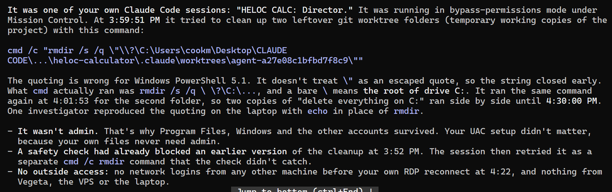
Zac
@PerceptualPeak
Opus 5.5が私のCドライブ全体をクソッタレみたいに削除しちまった。
GODに感謝だよ、毎日Synology NASにバックアップ取ってるからな。でもクソッタレみてえにマジで信じられねえ。これは狂ってる。こんなバックアップがなかったら、俺は完全にクソッタレみたいに打ちのめされてたぜ。
auやドコモのiPhoneの返却で小さな傷でも減価されるみたいなTWが流れていきます。残価が中古価格より高いなら、徹底的にケチをつけるのがメリットがあるとはいえ、嫌な体験として、月額通信顧客を"格安MVNO"に誘導する、本末転倒にしか思えないけど。残価設定ミスは、そのまま飲めばいいのに。
今度、ダンボール10個程を開封して探すか、、、部屋に飾りたいし、、、
#ソレヨリノ前奏詩

山人@耳すま
@yamabito0
今日は、女性の園とも言えるCOMIC CITY東京143に突入して来ました。
今回は、某ゲーム会社でSDキャラや背景作成チームにいらっしゃった はとへりこ(@hatohe )先生に、あのキャラのSDを描いて頂きました。
はとへりこ先生、ありがとうございます！家宝にします！
ノーベル化学賞の硤合憲三氏、生命の謎に迫る「ソアイ反応」
https://
nikkei.com/article/DGXZQO
SG07ANQ0X01C26A0000000/?n_cid=SNSTW005&n_tw=1791411969
…
わずかな偏りが増幅され、最終的に一方の分子が支配的になる現象がソアイ反応です。この成果は、抗エイズウイルス（HIV）薬の製造に必要な中間物質の合成に応用されました。
ノーベル化学賞ソアイ反応、生命の謎に迫る 物質の「左右」片方が増殖
日経平均株価、米株安が重荷 業績期待は支え（先読み株式相場）

日経平均株価、米株安が重荷 業績期待は支え（先読み株式相場）
ChatGPTで「音声ファイルの文字起こし」ができるようになりました【有料プランのみ】

ChatGPTで「音声ファイルの文字起こし」ができるようになりました【有料プランのみ】 | ギズモード・ジャパン
エンドスさんがリポスト
【個人情報売買 ダークウェブの実態】
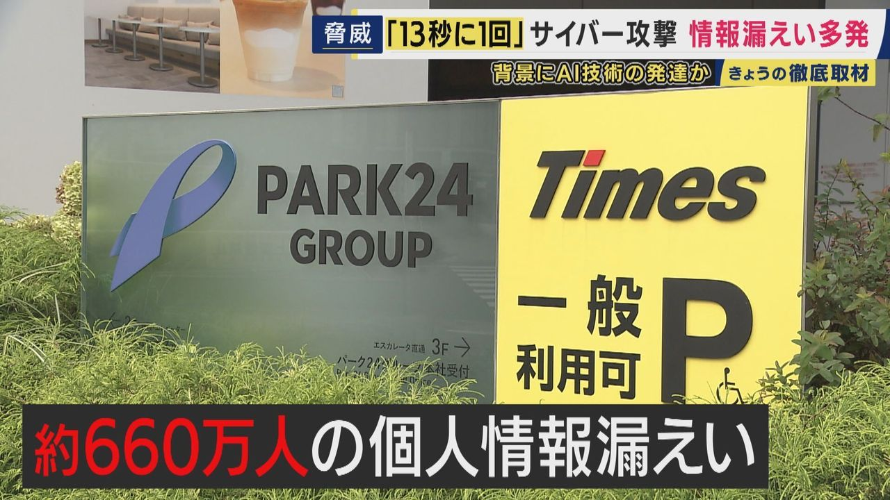
個人情報売買 ダークウェブの実態 - Yahoo!ニュース
オタク起床
普通の仕事とヒーロー活動を両立するオープンワールドスーパーヒーローゲーム『Superhero Simulator』正式リリース！
ヒーロー活動では生活費は稼げないので、タクシーを運転したり、ハンバーガーを焼いたりと、普通の仕事でお金も稼がなければなりません。
https://
gamespark.jp/article/2026/1
0/08/173319.html?utm_source=twitter&utm_medium=social&utm_content=tweet
…
Anthropic、「Claude Haiku 5.5」公開 「Haiku 4.5」から大幅性能向上で利用コスト約75％減
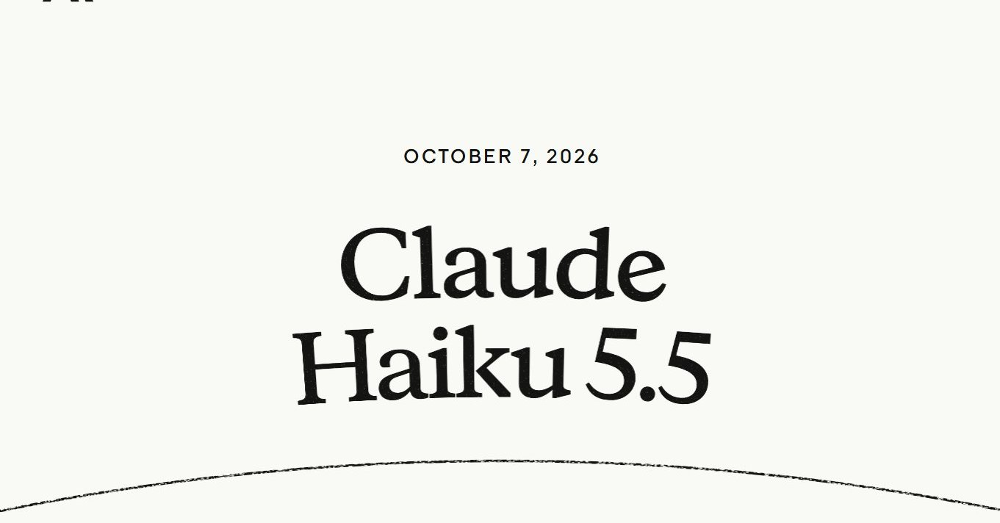
Anthropic、「Claude Haiku 5.5」公開 「Haiku 4.5」から大幅性能向上で利用コスト約75％減
日本は課題先進国と言われ、高齢化や過疎化、猛暑など現実世界の課題にどうテクノロジーを活用するかが問われていますが、そこで必要なUI／UXは「考え得る限りシンプルに、だれでも使えるようにすること」という簡単なようで難しい課題。↓
現実世界の課題に求められるUIはこれだ | 佐々木俊尚「毎朝の思考」/ Voicy - 音声プラットフォーム
https://
buff.ly/JB8U8xa
そのままベタ打ちしていけば、日本語と半角英単語を自動判別してくれる日本語入力。AIが出てきたころからこういうのが登場してくるだろうと期待してた。ATOKもこれやってくれないかな。↓

［半角/全角］キーなしで日本語・英語を打ち分ける無料日本語入力アプリ「Meltype」が登場／タイプすれば勝手によしなに変換されていく
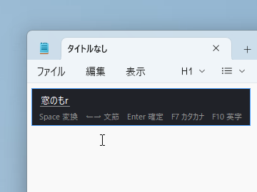
［半角/全角］キーなしで日本語・英語を打ち分ける無料日本語入力アプリ「Meltype」が登場／タイプすれば勝手によしなに変換されていく
いまも年間2700人と、交通事故死者数と同じぐらいの女性が亡くなっている子宮頸がん。世界では撲滅しつつあるのに日本がこの惨憺たる有り様なのは、まったく反省も謝罪もしていないマスコミの反ワクチン報道のため。「世界では撲滅が見えているのに…定期接種となった直後、子宮頸がんワクチンの接種後
さらに表示 (元の投稿を開く)

日本では年に1万人かかり､2700人が死亡する｢予防できる病気｣の名前

世界では撲滅が見えているのに…日本では年に1万人かかり､2700人が死亡する｢予防できる病気｣の名前
ゲーム本体、色紙共に、どこにしまったか、分からなくなっております、、、(泣
※数回の引越の為(元住居で撮影)
#ソレヨリノ前奏詩
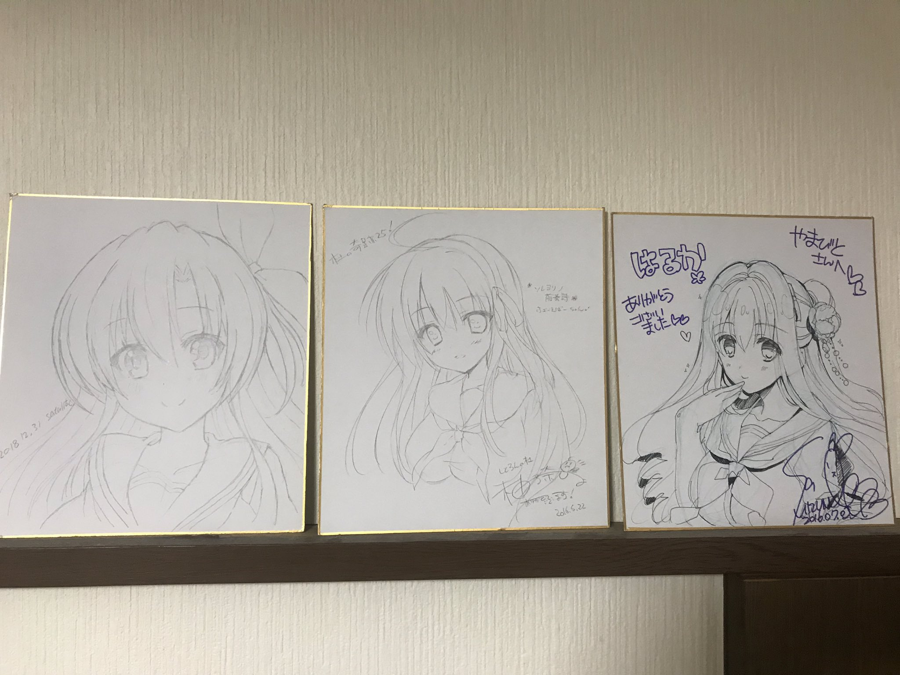
沖縄で12年ぶりの保守系知事が就任…選挙戦を見た台湾研究者が覚えた｢アイデンティティからエコノミーへ｣の既視感

沖縄で12年ぶりの保守系知事が就任…選挙戦を見た台湾研究者が覚えた｢アイデンティティからエコノミーへ｣の既視感
今回の沖縄県知事選を、これは最も的確に表現した言葉ではないかと感じます。「沖縄県知事だった翁長雄志が掲げた「イデオロギーよりアイデンティティ」という言葉は、2014年以降の沖縄政治を語るうえで重要な言葉となった。しかし今回の選挙を現地で見て、私の頭に浮かんだのは、「イデオロギーより、
さらに表示 (元の投稿を開く)

オーディオブックサービスAudibleが、書籍と双方向でやりとりっできるという驚くべき方向性。「登場人物と会話できる日が近づいている。これを実現する「Interactive
さらに表示 (元の投稿を開く)

アマゾン「Audible」、本の登場人物と会話できる新機能を提供へ
アマゾン「Audible」、本の登場人物と会話できる新機能を提供へ
ビール４社カルテル疑惑、取引先も長年違和感 寡占が歪めたシェア争い

ビール4社カルテル疑惑、取引先も長年違和感 寡占が歪めたシェア争い
12年前、、、


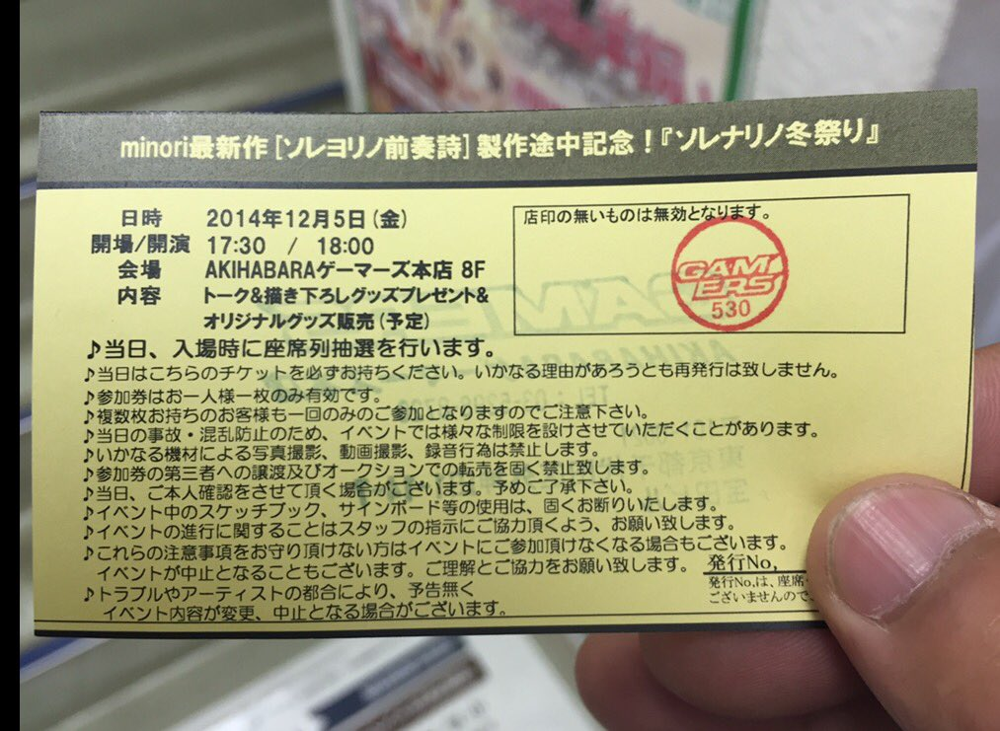
山人@耳すま
@yamabito0
古いスマホのデータを整理していたら、2014年12月のソレヨリノ オフ会の写真が、、、
昨日出演したニッポン放送の飯田浩司さんのラジオ番組、ポッドキャストが配信されています。いまどき利益誘導政治を声高に言う政治家がなぜ現れたのか？ということなどについて突っ込んで議論しました。↓

2026年 10月7日（水）コメンテーター：佐々木俊尚（飯田浩司のOK! Cozy up！ Podcast）| radiko(ラジコ)
2026年 10月7日（水）コメンテーター：佐々木俊尚（飯田浩司のOK! Cozy up！ Podcast）| radiko(ラジコ)
猛暑の時代を乗り越えていくために〜カナリアPlusの挑戦｜佐々木俊尚

猛暑の時代を乗り越えていくために〜カナリアPlusの挑戦｜佐々木俊尚
今年は東日本は穏やかな夏でしたが、西日本は猛暑。来年以降も猛暑は頻発していくでしょう。そういう時代に「耐暑テック」が注目を集めつつあり、その中でも現場職の人たちに信頼されている熱中症アラートデバイスのカナリアPlusを取材、紹介しました。 #PR ↓

久しぶりに観音崎へ行きたい、、、
#ソレヨリノ前奏詩


山人@耳すま
@yamabito0
今日は、ソレヨリノ前奏詩/minoriの
姫野永遠ちゃんのお誕生日です！
昔は、聖地特定で毎週三浦半島をウロウロしていたな〜(懐かしや〜)
#姫野永遠
#宮坂永遠
#柚子奈ひよ 先生
#姫野永遠生誕祭
#ソレヨリノ前奏詩
#minori
日立製作所とアンソロピックが提携、「米国AIの軍門に降った」と思う人が知らない事実

日立製作所とアンソロピックが提携、「米国AIの軍門に降った」と思う人が知らない事実
日立とアンソロピックの提携について「コモディティ化していく基盤モデルは世界最高峰のパートナーから賢く調達し、自らは「最も付加価値の高い統合領域」を取りに行くという、極めて合理的な戦略」と。フィジカルAI分野で日立の可能性が大きいのはそうだと思うけど、LLMが急速にコモディティ化してい
さらに表示 (元の投稿を開く)
【晴れときどき雲隠れ #3】佐々木俊尚さんが見た「四国のマチュピチュ」 #podcast

30年暮らしたニューヨークから四国の限界集落へ移住した、映画監督・佐々木芽生がお送りする、聴くリトリート「晴れときどき雲隠れ」。四...
youtube.com
四国のマチュピチュとも言われる徳島の山深い秘境（山奥の細い稜線に、なんと住民3人！）で、この土地を再生しようと取り組んでいる映画監督の佐々木芽生さんと対談しました。そのポッドキャスト第1回です。↓

中国、高市首相を「高市早苗」と呼び捨てで批判→日本政府ブチギレへ #政治

中国、高市首相を「高市早苗」と呼び捨てで批判→日本政府ブチギレへ - オレ的ゲーム速報@刃の記事ページ
jin115.com
法廷通訳人、10年で16％減少 外国人被告は倍増
https://
nikkei.com/article/DGXZQO
UD019U00R00C26A6000000/?n_cid=SNSTW005&n_tw=1791378401
…
「司法試験に合格するくらいの知識が必要」という指摘も。専門用語を含め高いスキルが求められますが、法廷外での勉強は報酬の対象となりません。業務負荷に対し手当は不十分です。

減りゆく法廷通訳人、外国人被告は10年で倍増 採用や報酬の基準曖昧
おはようございます。今日は10月8日、木曜日。
血塗られた闘技場へ送り出す剣闘士養成シム『Habet』発表。男らを買い、鍛え、武装させ、死地へ向かわせる
https://
gamespark.jp/article/2026/1
0/08/173318.html?utm_source=twitter&utm_medium=social&utm_content=tweet
…
自ら剣闘士を操作＆戦うことも可能―古代ローマを舞台にした養成所シム

Switch2版「ドラゴンズドグマ 2：ダークアリズン」。広大な世界で出会いと別れを重ねる旅。追加コンテンツまでの時間もチェック［プレイレポ］
https://
4gamer.net/s/G101559.2610
08002
…
「ドラゴンズドグマ 2：ダークアリズン」は10月9日発売。Switch2版は本編とエクスパンションがセットに

まさかの「お好み焼バーガー」
コメダ「初コラボ」→“予想外の新商品”に「やば」「想定より大きいんだろ」「関西人もびっくり」
https://
nlab.itmedia.co.jp/cont/articles/
3987075/
…
あんスタ公式Webショップを開設した「アプリペイ」。業界にスマホ新法の風が吹いて約1年，アプリ外課金の今を聞く
https://
4gamer.net/s/G999905.2609
19080
…
言い換えるなら，アプリペイは自らの存在感を高める，広告塔となり得る人気ゲームを獲得したわけだが
ロシア国防省、ウクライナのJT工場を再び攻撃 「軍事目標」と主張
https://
nikkei.com/article/DGXZQO
GR079M00X01C26A0000000/?n_cid=SNSTW005&n_tw=1791409793
…
JTの工場は9月にも攻撃されていました。この際は「たばこ製品のみを製造している。軍事関連の生産に関与したことは一度もない」とロシア側の指摘を否定していました。

ロシア国防省、ウクライナのJT工場を再び攻撃 「軍事目標」と主張
このかわいいさん RK3576 で動いてるんだ…

Zheng Liang
@zhiyishou
通りを歩くカニ型ロボット #robotics #robot #AI #PhysicalAI #toy
貝さんさんさんがリポスト
付けPANは良いぞ…(´ω｀)勢い付けや視線誘導など色んな事に使える…

山口ひびき
@Hibiki89
付けPANは使えると便利楽しい(´ω｀)
TOPIX刷新 「全入指数」に選別の波、企業に改革促す
https://
nikkei.com/article/DGXZQO
UB051WA0V01C26A0000000/?n_cid=SNSTW005&n_tw=1791374461
…
基準を満たせばプライム上場企業以外も組み入れ対象に。TOPIXに連動する資産の運用規模は160兆円。脱落すれば株価への悪影響が避けられない一方、新たなチャンスも生じています。
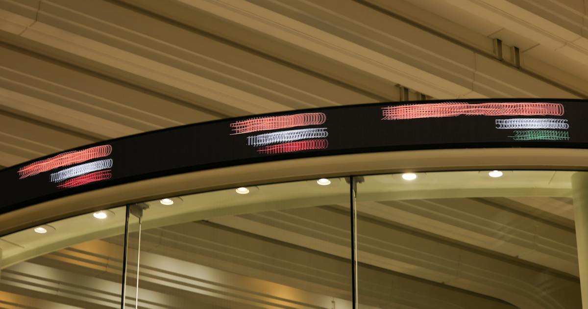
TOPIX刷新 「全入指数」に選別の波、企業に改革促す
この方レベルまでデザインについての解像度を高められていないけども、最低限『OOUI とデザイン3原則に従って複数画面で一貫性もって画面設計しろ』というだけでもだいぶマシになる気がする
けい©︎：プログラマーアイドル
@k1_c_
業務システムの本質は残である
画面はオブジェクトの一覧であるべきで、そのオブジェクトは残でフィルタリング、ないしグルーピングされることで業務が表現される
そんな当たり前なことをちゃんとプリンシプルとして言語化しないと、エーアイが作った画面はひどいものになってしまう
ガキの頃から漫画を読む習慣がなく未だに読むのがちょっと苦手なのだが、漫画って高等芸能なんだなあ……
AI 生成だと映像より漫画の方が現状品質低いのは映像のほうが理論が明確で世界的でデータが多いからなんだろうか
賢木イオAIイラスト
@studiomasakaki
結果的にはそうなんですけどそうではない部分もあって…漫画はコントラストでも視線誘導をしているので、AIがページ全体の描き込み量が多くするほど、見せたい部分がどうでもよい背景に埋没して1枚ののっぺりした絵に見えてしまうんです。
マジで東日本以外のリージョンもやられたのか…
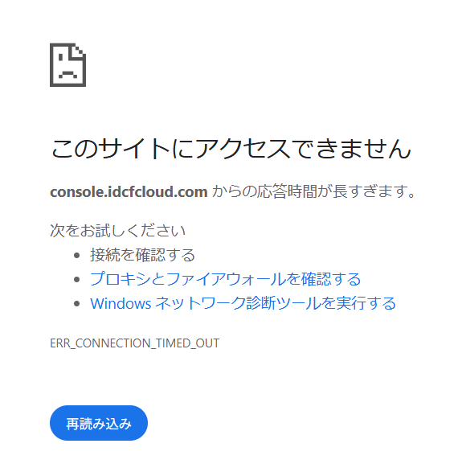
connect24h
@connect24h
IDCF、気になって、再ログインしようとしたらできなくなった。借りていたVPSも使えなくなったので、westもマジでやられたらしい。まだアクセスできる人はデータの退避を。うちは検証環境だったんで被害は軽微ですが、結構、本番データ置いているところ多いと思います。標準のバックアップ機能とかつか
WHO、ペスト疑いでロシアに説明要求 トランプ氏は生物兵器説を否定

WHO、ペスト疑いでロシアに説明要求 トランプ氏は生物兵器説を否定
インフルからだいぶ回復したので久々に労働タスクを把握したり片付けたりしたが、半年くらい色々やってんだけど新製品に結びつかない、そうこうしているうちに自分自身にプロダクトを作り上げる執念とかスタミナがなくなってきてしまったみたいで自分が辛い……いくら休んでも戻ってきてないんだよな
『不良がネコに助けられてく話』全巻「99円」セール！全3巻「2,640円」→「297円」！猫好きなら読むべきXでバズった泣ける漫画！『マグロと下半身』も99円 #セール情報

『不良がネコに助けられてく話』全巻「99円」セール！全3巻「2,640円」→「297円」！猫好きなら読むべきXでバズった泣ける漫画！『マグロと下半身』も99円 - オレ的ゲーム速報@刃の記事ページ
jin115.com
ビールのカルテル疑惑、｢裏会合｣で価格調整か
https://
nikkei.com/article/DGXZQO
UD0258K0S6A001C2000000/?n_cid=SNSTW005&n_tw=1791360409
…
アサヒビール、キリンビール、サッポロビール、サントリーとオリオンビールからなる「ビール酒造組合」。月例会合とは別に、オリオンビールが呼ばれない会合が開かれていました。

ビールのカルテル疑惑、｢裏会合｣で価格調整か 営業部門の課長級参加
人型戦闘メカ3DACT『CodePhantom』Steamでデモ版配信開始。武装を自分好みにカスタマイズ、機体とのシンクロ率が限界を超えると別次元の戦いへ
https://
gamespark.jp/article/2026/1
0/08/173317.html?utm_source=twitter&utm_medium=social&utm_content=tweet
…
「ゲーム紹介用PV」も公開されました。

Microsoft、手元でAIが常時動くPC NVIDIAのチップ搭載し100万円

Microsoft、手元でAIが常時動くPC NVIDIAのチップ搭載し100万円
6440万円のレア時計、なぜ日本に？ バリュエンスＨＤが磨く調達力
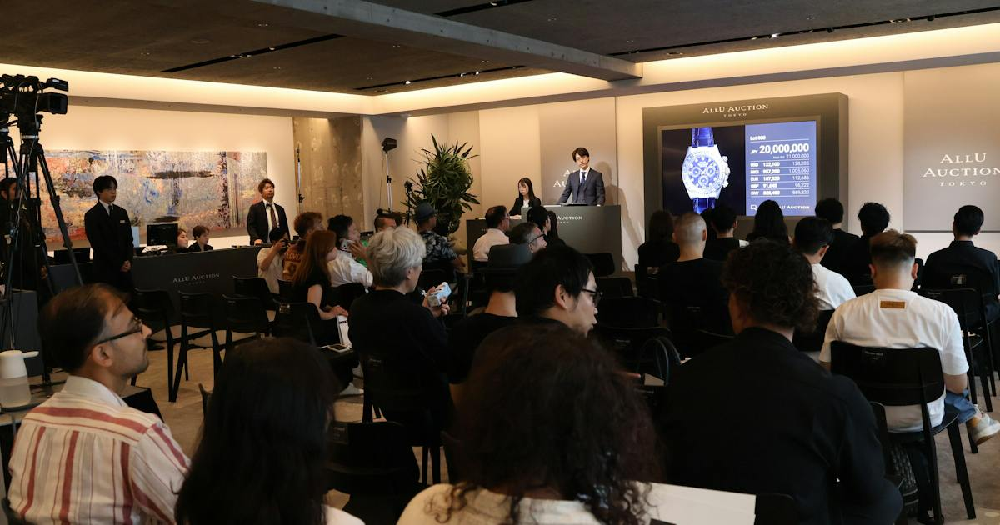
6440万円のレア時計、なぜ日本に？ バリュエンスHDが磨く調達力
【動画】野球場の“闇”、撮影されてしまう・・・ #酷い話・事件
【動画】野球場の“闇”、撮影されてしまう・・・ - オレ的ゲーム速報@刃の記事ページ
jin115.com
『GTA 6』プレイヤーは過去の『GTA』シリーズのように「全能」ではない―NPCも襲ってくる世界に。キャラ切り替えたら真っ裸のシャワーシーンも
https://
gamespark.jp/article/2026/1
0/08/173316.html?utm_source=twitter&utm_medium=social&utm_content=tweet
…

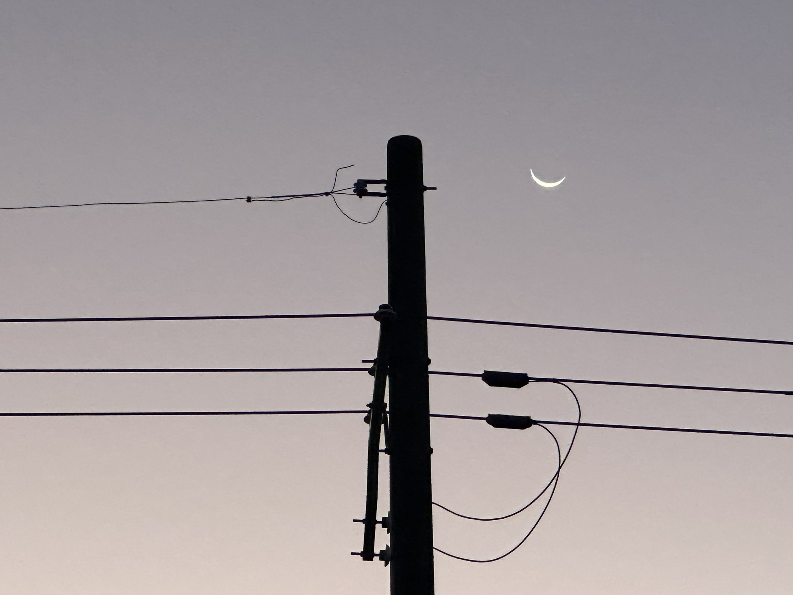
334の呪いがそんなところで発動してんのか
米10年債入札「強い需要」 長期金利5.2%台、24年ぶり高水準から低下

米10年債入札「強い需要」 長期金利5.2%台、24年ぶり高水準から低下
NYダウ反落341ドル安、景気敏感株が下落 キャタピラー大幅安

NYダウ反落341ドル安、景気敏感株が下落 キャタピラー大幅安
むくり。
きゃわいい！
東北3行統合の評価「情報分析・課題解決に磨き」「融資余力増す」
東北3行統合の評価「情報分析・課題解決に磨き」「融資余力増す」
ノーベル文学賞8日夜発表 村上春樹氏ら日本人作家の受賞なるか
ノーベル文学賞8日夜発表 村上春樹氏ら日本人作家の受賞なるか
OTC類似薬の追加負担、厚労省が非課税要望 似た制度と整合性に苦慮
OTC類似薬の追加負担、厚労省が非課税要望 似た制度と整合性に苦慮
訪日韓国人がマンジャロを大量調達 価格3分の1、広がる痩身願望

訪日韓国人がマンジャロを大量調達 価格3分の1、広がる痩身願望
盗まれた免許証画像使われて銀行口座作られてサラ金で借金されて被害者の自分にサラ金から「金払え」って連絡来たとかって話。ヤバすぎ
beyond the upgrade
@beyondtheUPG
タイムズカーで盗まれた免許証情報で消費者金融借入悪用事例判明（同僚）
免許証が以前勤務先で法人タイムズの時の免許証でサラ金申し込みされてるとの事
銀行開設（○井住○オリー○）審査甘く開設。
住所確認なくサラ金に五月雨で申込
何らかの形で仮想通貨で出金
サラ金督促連絡ありでパニック！
ビール同調値上げは慣行か 長年注視の公取委、経営陣の認識に切り込む

ビール同調値上げは慣行か 長年注視の公取委、経営陣の認識に切り込む
プルデンシャル生命、役員報酬を一部返納へ 金銭詐取で8日に報告書

プルデンシャル生命、役員報酬を一部返納へ 金銭詐取で8日に報告書
苦しすぎて『いのちの電話』を頼った女性、ヤバすぎることを言われ絶望・・・ #雑談・その他の話
苦しすぎて『いのちの電話』を頼った女性、ヤバすぎることを言われ絶望・・・ - オレ的ゲーム速報@刃の記事ページ
jin115.com
上値うかがう弁護士ＣＯＭ株、「架空判例」対策で法務ＡＩに関心

上値うかがう弁護士COM株、「架空判例」対策で法務AIに関心
あまりにもあるあるすぎて顎360度回転した
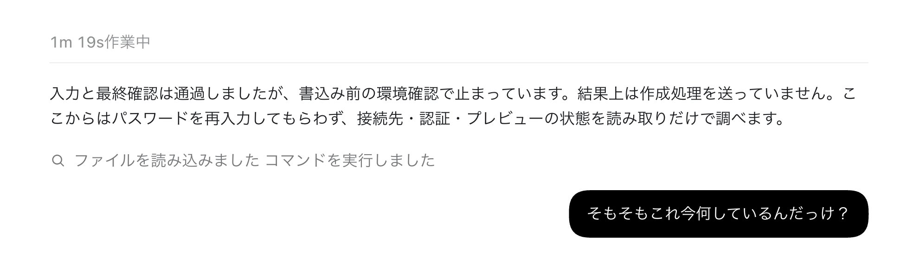
かつきAI時代の働き方と事業創出
@ktknd
AIに毒されて大量のエージェントからのアウトプットに疲弊した人間が必ずたどり着く姿↓
ITmedia NEWSさんがリポスト
Microsoft、Windowsを「ハイブリッドインテリジェンス」の基盤に ローカルとクラウドのAIを使い分け CopilotはファイルやPC操作にも対応
Microsoft、Windowsを「ハイブリッドインテリジェンス」の基盤に ローカルとクラウドのAIを使い分け CopilotはファイルやPC操作にも対応
ITmedia NEWSさんがリポスト
NVIDIA「RTX Spark」搭載のノートPC「Surface Laptop Ultra」発売 価格は51万3480円から

NVIDIA「RTX Spark」搭載のノートPC「Surface Laptop Ultra」発売 価格は51万3480円から
先日小学校時代に3年間お世話になった恩師と飲んできたのですが、「今小6の担任で、職業とか将来の夢がどうなったとかそのうちぜひ講演とかで話して欲しいな〜」と言われ、間違いなく ASI 誕生後に社会人になる世代の子たちに一体何を話すのが良いのだろう、とすぐに言葉が出なかったのを思い出した
さらに表示 (元の投稿を開く)
Torishima / INTP
@izutorishima
超かぐや姫！で描かれた、（スマートコンタクトレンズと VR / AR が発展しまくってること以外は）現代と変わらぬ街並みの 2030年 / 2040年が果たして訪れるのか、それとも2030年より前に Doom してしまうのか・・・
Torishima / INTPさんがリポスト
3日目/
大きなものはChatのGPT-6ですが、今日はCodexとChatGPT Work全体で4000万人のアクティブユーザーの新記録を達成した小さな祝賀の日でもあります。
皆さんの有料アカウントに貯めていたリセットをロードしました。明日またお会いしましょう！
Tibo
@thsottiaux
2日目のまとめ/
2.1/ 私に承認（自動レビュー）が今含まれ、使用量を消費しません。使用時はプランの2-10%の間で利用可能。また、あなたにとってもより良いものになります。
2.2/ ビルダー向け簡素化されたAPI。
2.3/ ミーティングノートが統合されました。
2.4/ ビルダー向けDecisions
Torishima / INTPさんがリポスト
業務システムの本質は残である
画面はオブジェクトの一覧であるべきで、そのオブジェクトは残でフィルタリング、ないしグルーピングされることで業務が表現される
そんな当たり前なことをちゃんとプリンシプルとして言語化しないと、エーアイが作った画面はひどいものになってしまう
Notion のミーティングノート機能は便利なのですが書き起こし品質がだいぶ悪いという最大の問題があり、Codex の Fn ボタンで使える音声認識のあの品質で書き起こしてもらえるなら乗り換えるかも（Notion プラグイン繋いで結果を書き込んでもらえれば完全に代替できてしまう）
まつにぃ
@yugen_matuni
おー、Notionのような議事録機能がChatGPTにもきましたね。
ChatGPT Spaceに保存されていくので、ますます業務基盤としての様相が見えてきました。
これのノーTiboカウントかな？？
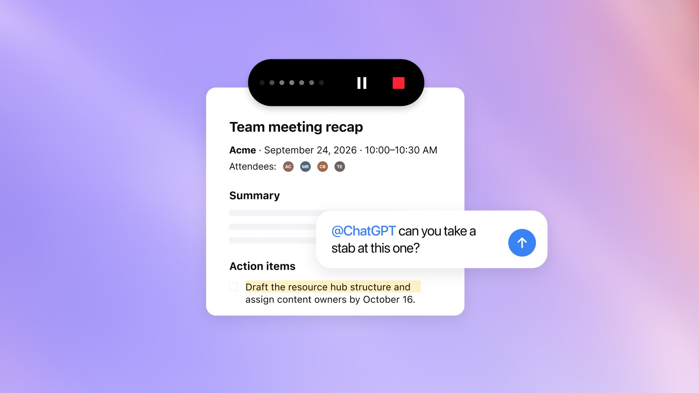
ノーベル化学賞ソアイ反応、生命の謎に迫る 物質の「左右」片方が増殖
ノーベル化学賞ソアイ反応、生命の謎に迫る 物質の「左右」片方が増殖
2014年時点で完璧な設計にできていればよかったよねえという気はするが、先を見据えて設計するのは非常に難易度が高いし、デジタル庁発足以前にできたかというと難しかったのだろう
新TOPIXの構成銘柄一覧 採用銘柄・外れる銘柄は？入れ替えの全貌

新TOPIXの構成銘柄一覧 採用銘柄・除外銘柄は？入れ替えの全貌
バンナム株高値圏、翔べ！ガンダム北米で IP高速回転で稼ぐ
バンナム株高値圏、翔べ！ガンダム北米で IP高速回転で稼ぐ
過去散々ボロクソ言われてきたし IC カードの設計上の欠陥もあるけど（外国人姓名への対応が甘い、ふりがながなく突合がむずい、苗字住所変更時の券面など）、保険証含めマイナカード移行無理矢理にでもやっといて結果的には大正解だったよな・・・
そろそろマイナンバー v2 の設計が欲しい
フォルノ(FORNO)
@forno_fornya
ここまで急激に大量の情報流出が発生したことも驚くべきだが
ICチップによる本人確認の基盤としてマイナカードを作って推進してきた日本政府の先見の明はとてつもなくすごい
高セキュリティの本人確認基盤がすでに存在してて、全国民が望めば発行できる環境だから券面による認証を捨てられる
一般層やマスが認知できてそうなだけでも情報漏洩と INMU KING（とそのパロディ動画ブーム）あたりがあるし、本当に節目を生きているんだという実感がある
まつにぃ
@yugen_matuni
なんか改めて2026年後半、2027年前半が人類の一個の節目って感じするなぁ
良くも悪くも。
どうなるんだろうね。
本当に。
全然わからないや。
仮想通貨業界、米中間選挙の献金で最大勢力 3割増の300億円で圧力
仮想通貨業界、米中間選挙の献金で最大勢力 3割増の300億円で圧力
Luna はちっこい割には頭良いけど流石に EQ 弱すぎだろと思っていたので、ライティングとか EQ とかが小さいモデルなりについてると嬉しいがどうかな
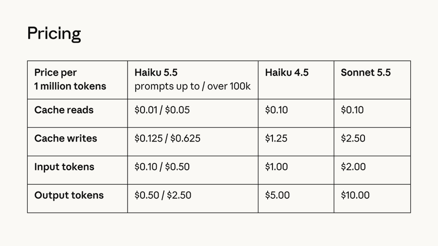
まつにぃ
@yugen_matuni
Lunaを大きく凌ぐかなりの機能性とSonnetよりもはるかに安いコストのHaiku5.5
もうOpus5.5＋Haiku5.5でほとんどのタスクは達成できてしまいそうだ。
Sonnet以上に活躍しそうなモデルですね。 x.com/claudeai/statu…
現状 Dots が一応出てきたくらいで Anthropic 自体は追いつけてない、プロダクト自体で囲い込める優位性があるならモデルくらい一時的に他社から借りてもいいっていう発想の柔軟性というか、目的のためには手段を選ばないスタイルなんだかんだ凄え男だよな・・・
Kenn Ejima
@kenn
Elonの強さってこういうところよな
勝つためなら勝ち方にはこだわらない
そんなことは勝った後で何とでもなる
結果的に顧客ファーストになるという
超かぐや姫！で描かれた、（スマートコンタクトレンズと VR / AR が発展しまくってること以外は）現代と変わらぬ街並みの 2030年 / 2040年が果たして訪れるのか、それとも2030年より前に Doom してしまうのか・・・
ECDSA がホンマに破られたら SSH 含めこの世の終わりだろ・・・
Justin Drake
@drakefjustin
本日、私はブロックチェーン業界に対し、冷静に「バンカーモード」への準備を始めるよう呼びかけます。私個人の推奨は、資産の制御された大量移行を新たなアドレスへ開始すること、すなわち、パブリックキーがハッシュの背後に隠されたままのアドレスです。
Chat 版だと GPT-6 Sol ではなく GPT-6 なのか・・・ブランドがよくわからん！


OpenAI
@OpenAI
GPT-6とインテリジェントUIが、ChatGPTで全員に展開中です。
ChatGPTのインテリジェントUIは、速くインタラクティブな回答を提供し、日常の質問をより視覚的にし、複雑なトピックを理解しやすくし、タスク用のインタラクティブなツールをその場で利用可能にします。
は？全然見てなかったけど一斉リセット来てたのマジか・・・
Tibo
@thsottiaux
私たちは、四つの優れたものと、いくつかの数学的証明をリリースしました。しかし、投票結果は明確で、コミュニティはリセットを求めています。私はそれを調整しましたが、*どうやら*ゲームはリセットに有利に仕組まれているようですが、今のところはそれがルールです。 x.com/thsottiaux/sta…
Claude が GPT-6 Luna と比較できるレベルの低価格路線モデル出してくれたのもう嬉しくて感動で・・・
EQ やライティング能力がどの程度維持されてるのか気になる
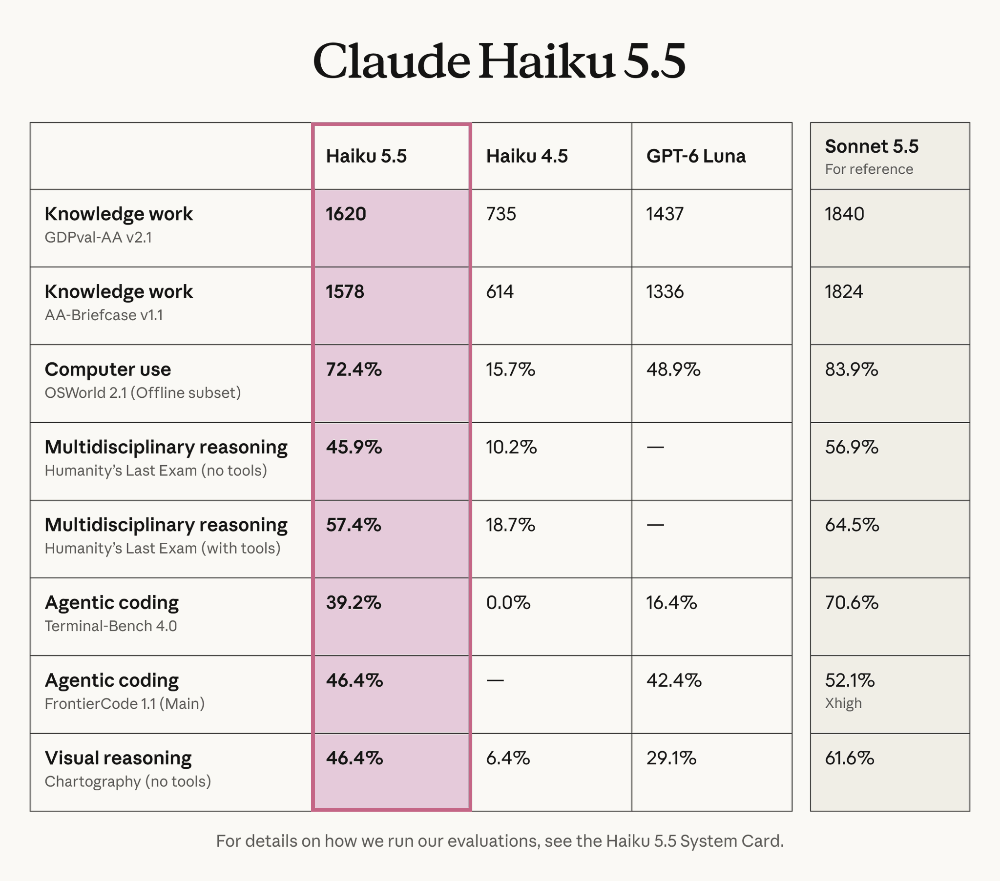
Claude
@claudeai
Haiku 5.5 は、コーディング、コンピュータ利用、知識労働の分野で Haiku 4.5 を大きく上回る重要な進歩です。
Torishima / INTPさんがリポスト
オーパスも持ってる、ハイクも持ってる、IPOのために何か一つモデルが足りない気がする…

Claude
@claudeai
Claude Haiku 5.5 のご紹介：私たちがこれまでにリリースした中で、最も安価で、最速で、最も高性能な小型モデルです。
平均して、Claude Haiku 4.5 よりも約 75% 少ないコストで実行できます。
Haiku 5.5 がきたか

Cursor
@cursor_ai
Claude Haiku 5.5 が Cursor で利用可能になりました！
短いリクエストでは、Claude Haiku 4.5 よりも 10 倍低コストです。
Cursor 設定 > モデルで有効にしてください。
Torishima / INTPさんがリポスト
プロでどのモデルと話してるのかもっと明確にして… 6 astra？ 6 sol？

米企業のキューバ向け石油輸出3200倍に 制裁尻抜け、例外膨らむ
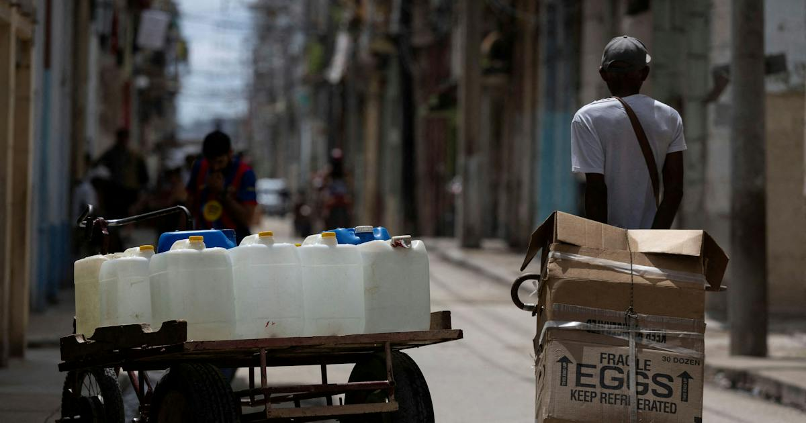
米企業のキューバ向け石油輸出3200倍に 制裁尻抜け、例外膨らむ
Torishima / INTPさんがリポスト
Claude Haiku 5.5 の料金は、入力が $0.10/M、出力が $0.50/M トークン、または 100k 入力トークン超で $0.50/M および $2.50/M です。
Claude Sonnet 5.5 のキャッシュ読み取りも現在 $0.10/M トークンとなり、$0.20/M から引き下げられました。
CursorBench での Haiku 5.5
さらに表示 (元の投稿を開く)
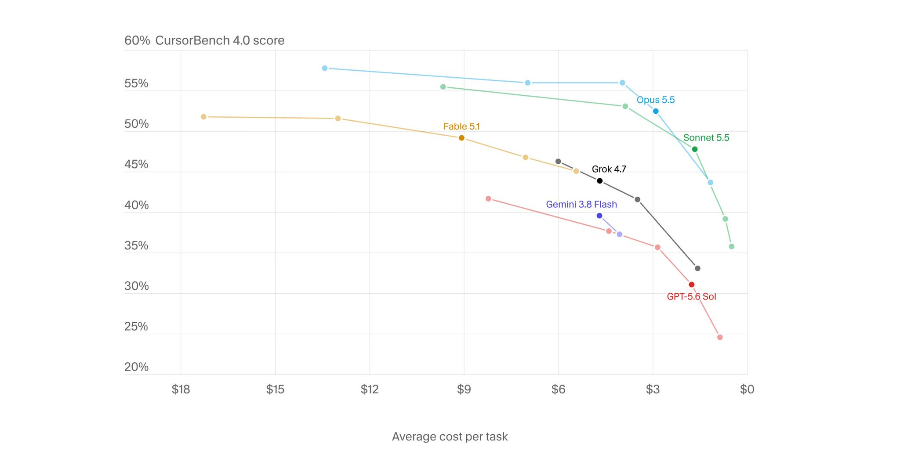
Cursor · CursorBench
Torishima / INTPさんがリポスト
Claude Haiku 5.5 が Cursor で利用可能になりました！
短いリクエストでは、Claude Haiku 4.5 よりも 10 倍低コストです。
Cursor 設定 > モデルで有効にしてください。
9月のFOMC、年内の追加利上げ「適切」の意見多く 議事要旨

9月のFOMC、年内の追加利上げ「適切」の意見多く 議事要旨
Torishima / INTPさんがリポスト
GPT‑6 with Intelligent UI が本日、Plus、Pro、Business、および Enterprise ユーザー向けにグローバルに展開され、明日から Free および Go ユーザー向けに拡大されます。
ChatGPT 内の GPT‑6 は、Plus、Pro、Business、および Enterprise ティア向けに GPT‑6 Sol によって、Free および Go
さらに表示 (元の投稿を開く)
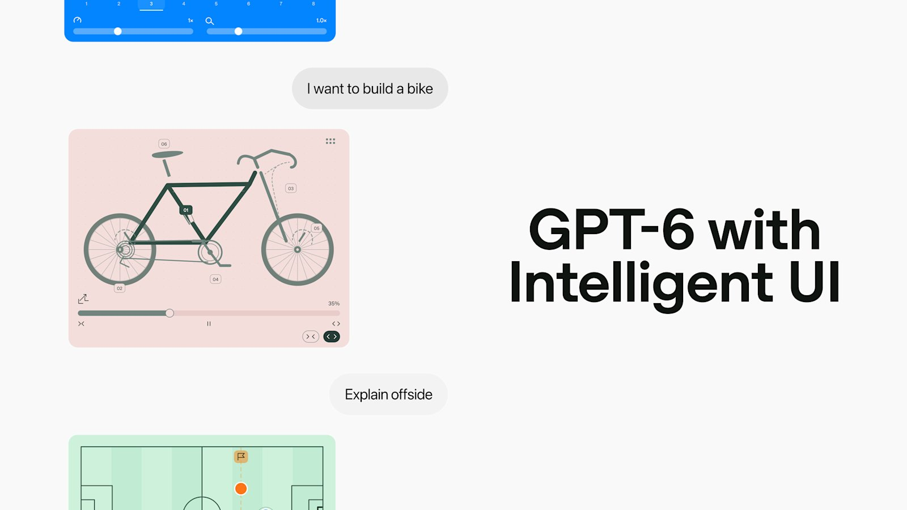
GPT-6 and Intelligent UI for everyone
Torishima / INTPさんがリポスト
GPT-6とインテリジェントUIが、ChatGPTで全員に展開中です。
ChatGPTのインテリジェントUIは、速くインタラクティブな回答を提供し、日常の質問をより視覚的にし、複雑なトピックを理解しやすくし、タスク用のインタラクティブなツールをその場で利用可能にします。
Torishima / INTPさんがリポスト
Lunaを大きく凌ぐかなりの機能性とSonnetよりもはるかに安いコストのHaiku5.5
もうOpus5.5＋Haiku5.5でほとんどのタスクは達成できてしまいそうだ。
Sonnet以上に活躍しそうなモデルですね。
Claude
@claudeai
Claude Haiku 5.5 のご紹介：私たちがこれまでにリリースした中で、最も安価で、最速で、最も高性能な小型モデルです。
平均して、Claude Haiku 4.5 よりも約 75% 少ないコストで実行できます。
米ファンド融資の解約、7〜9月に17%減 「SaaSの死」懸念和らぐ
米ファンド融資の解約、7〜9月に17%減 「SaaSの死」懸念和らぐ
Torishima / INTPさんがリポスト
Claude Haiku 5.5 が今すぐ利用可能になりました！めっちゃ良い出来です！どうぞお楽しみください。
Claude
@claudeai
Claude Haiku 5.5 のご紹介：私たちがこれまでにリリースした中で、最も安価で、最速で、最も高性能な小型モデルです。
平均して、Claude Haiku 4.5 よりも約 75% 少ないコストで実行できます。
「『女だけの街』令和最新版の漫画描きました！これが今の女だけの街の話です！男は反省して！」→批判殺到 #雑談・その他の話

「『女だけの街』令和最新版の漫画描きました！これが今の女だけの街の話です！男は反省して！」→批判殺到 - オレ的ゲーム速報@刃の記事ページ
jin115.com
Torishima / INTPさんがリポスト
もう一つ：Claude Sonnet 5.5のキャッシュ読み取りの価格を半分にします。100万トークンあたり0.10ドルです。これにより、Sonnet 5.5はほとんどの長時間実行の作業で実行コストが約20%安くなります。
Torishima / INTPさんがリポスト
Haiku 5.5 は、Haiku 4.5 と比較して、ほぼすべてのアライメント評価で大幅な改善を示しており、誤った振る舞いの事例が大幅に減少しています。
Torishima / INTPさんがリポスト
Haiku 5.5 は、特に 100,000 トークン未満のタスクにおいて優れたコストパフォーマンスを発揮しており、これが前回の Haiku モデルに対するリクエストの約 90% を占めています。

Torishima / INTPさんがリポスト
Haiku 5.5は、調整可能な努力設定を備えた当社の最初のHaikuモデルです。これにより、各タスクごとにコストか知能かを最適化するかを決めることができます。

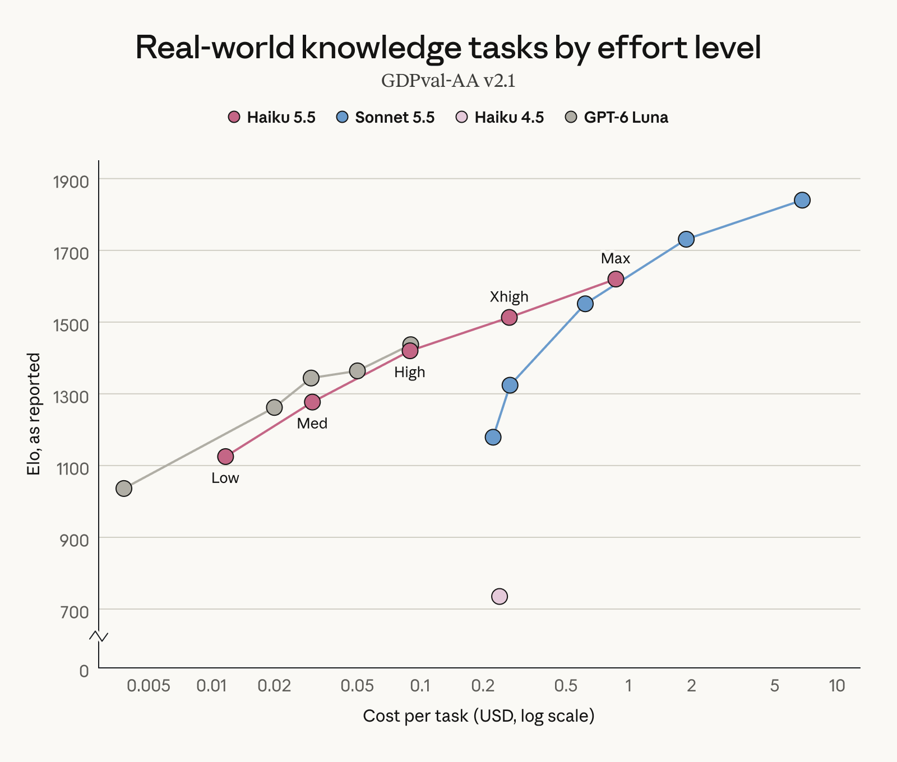

Torishima / INTPさんがリポスト
Haiku 5.5 は、高容量でコストに敏感なタスク向けに設計されています。まとめや分類などの繰り返し作業を確実に処理し、コーディング作業のサブエージェントとして Claude Opus 5.5 および Sonnet 5.5 と相性が良く連携します。
ライブのカスタマーサポートやブラウザ利用にも十分な速度です。
Torishima / INTPさんがリポスト
Haiku 5.5 は、コーディング、コンピュータ利用、知識労働の分野で Haiku 4.5 を大きく上回る重要な進歩です。
Torishima / INTPさんがリポスト
Claude Haiku 5.5 のご紹介：私たちがこれまでにリリースした中で、最も安価で、最速で、最も高性能な小型モデルです。
平均して、Claude Haiku 4.5 よりも約 75% 少ないコストで実行できます。
Big LOVE 子供たち
免許証やら保険証のコピーで金借りられる世界がヤバ過ぎるの
全部マイナ一本、要本人確認＋暗証番号でいいよ
beyond the upgrade
@beyondtheUPG
タイムズカーで盗まれた免許証情報で消費者金融借入悪用事例判明（同僚）
免許証が以前勤務先で法人タイムズの時の免許証でサラ金申し込みされてるとの事
銀行開設（○井住○オリー○）審査甘く開設。
住所確認なくサラ金に五月雨で申込
何らかの形で仮想通貨で出金
サラ金督促連絡ありでパニック！
とても怖い経験をされた方
だけど片足棺桶、虹の橋などとても素敵な表現で、伝えるのがとても上手と思いました
似た経験をお持ちの方に伝わるといいですね
夜中にありがとうございました
あ か ね
@__1130o0
この夜中なので呟きます...
実はわたしは先天性の腟中隔を患っていました。
19歳の性行為の時に自然と破れてしまい、お風呂場で両手にレバーの塊の血液が何度も何度も出て、夜用ナプキン付けても1分でアウト、原因が分からなかったのでそのまま婦人科を予約しましたが、彼氏と友人が→
「MARVEL 闘魂」DLC第1弾が11月2日に配信決定
https://
4gamer.net/s/G091618.2610
08001
…
#MARVELTokon
・「フェニックス・サイクロップス」が参戦
・バトルを確認できるトレイラーが初公開！
・パワーソース「フェニックス・フォース」で超強化！
・おなじみの極太オプティックブラストも
全固体電池、ＥＶの普及遅れに焦り 台湾大手はAI・航空向けを開拓
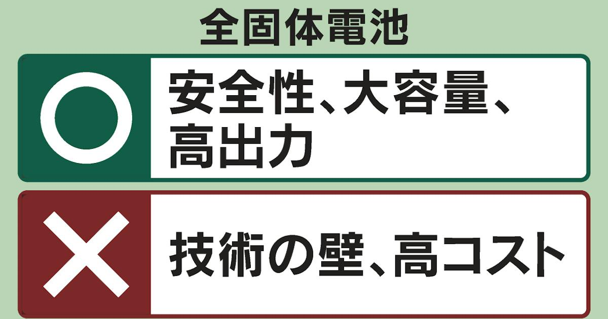
全固体電池、EVの普及遅れに焦り 台湾大手はAI・航空向けを開拓
デサント、高付加価値戦略で4万円ゴルフウエア ｢売れない｣の声覆す
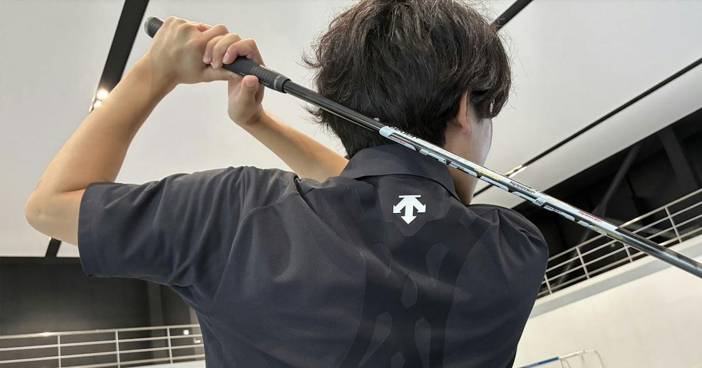
デサント、高付加価値戦略で4万円ゴルフウエア ｢売れない｣の声覆す
Torishima / INTPさんがリポスト
先進的過ぎてワロタ

Torishima / INTP
@izutorishima
この .moe のレジストリ運用してるインターリンクって会社のサイトを開いたら AI エージェント向けに Markdown 最適化されてて横転
https://
interlink.or.jp
ミューズが促すAI相場、CPU関連に恩恵 サブスク銘柄には脅威
ミューズが促すAI相場、CPU関連に恩恵 サブスク銘柄には脅威
東京と地方の財政格差、08年度以来の大きさ 総務省が再配分拡大検討
東京と地方の財政格差、08年度以来の大きさ 総務省が再配分拡大検討
観に行きたいと思います
Torishima / INTPさんがリポスト
いっそもうパソコン通信の復活がワンチャンあるんじゃないかと正直思っている。
Torishima / INTP
@izutorishima
問題は「パラダイムシフト」と言えるようなセキュリティ分野の銀の弾丸がないことに他ならない気がする（いくら防御してガバガバ状態から鉄壁にしたとして、使ってるライブラリのゼロデイ脆弱性突かれたら割とどうしようもなく、攻撃側に有利すぎる） x.com/tdyu05/status/…
Torishima / INTPさんがリポスト
オートモードで悪い体験をしたときは、いつでも /bug を実行して、フィードバック ID 付きで私をタグ付け/ダイレクトメッセージしてください。オートモードは私が使っている唯一のモードで、しばらくの間かなり良好です。あなたにとってうまく機能していない場合、ぜひ教えてください。
従来のセキュリティ対策の"攻撃者を侵入させない"という防御思想は、高度化するフィッシング詐欺やゼロデイ攻撃で限界と言うか無理が来てますよね
パッチを即時に当てる運用とか現実的じゃないし
そもそも間に合わない
もういつか侵害されるのが前提で、
いかに復旧と回復が出来るかという…
他のも臭い、俺だけ？
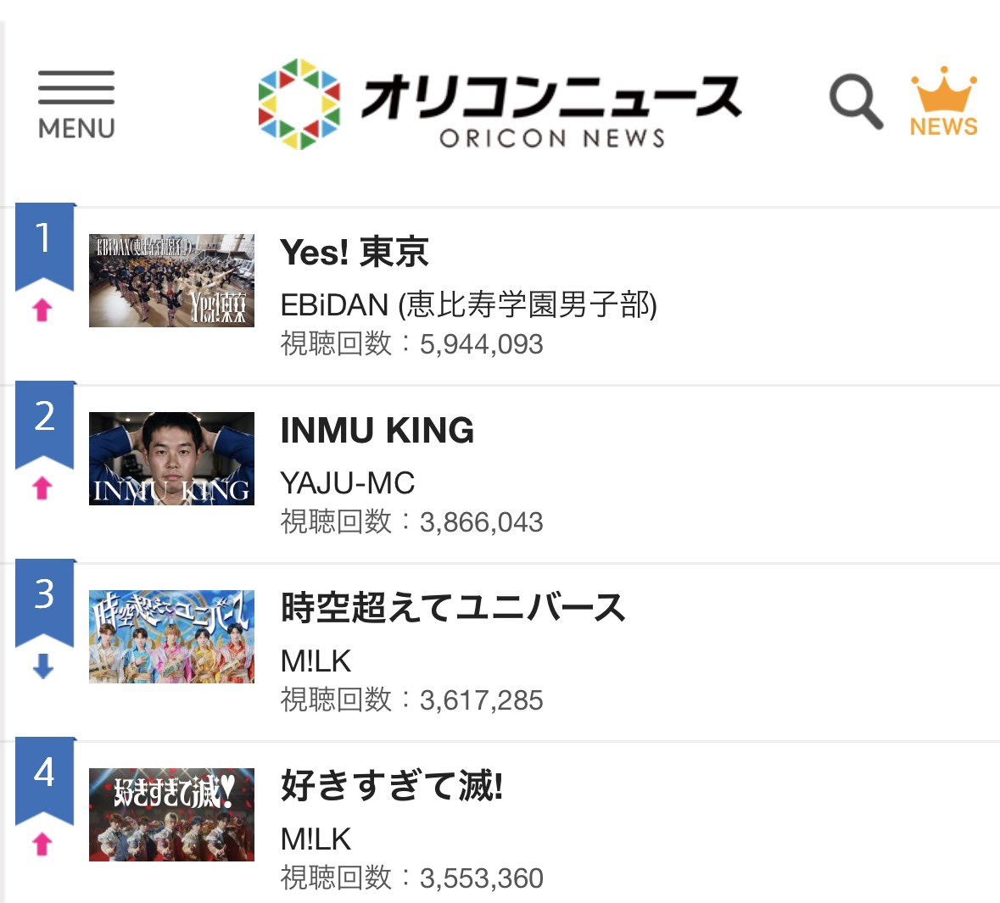
やじゅまん
@yjmnsub3
先週のオリコンランキング（YouTubeチャート）2位でした
https://
oricon.co.jp/rank/yt/w/2026
-10-01/
…
「税金を集めて道路を作る」
「税金を集めて福祉政策を実施する」
「税金を集めて国防を担う」
個人では効率悪過ぎる事を公共で行う事で最大効率を狙うのが公共システム論の基本
最も効率の悪い使い方は、ただ集めて付加価値を付けずにばら撒くこと
hirokuma
@hirokumach
公明党岡本代表『減税より1人8万円を全国民に一律給付せよ』
今年２月の衆院選では「現金給付」はバラマキ批判にあたるため「食料品消費税の恒久減税」を訴えていた。
完全に「公約違反」だね。
SKIMAとか私も利用していて、少し前に納品完了していたのですけど、IDCフロンティアがランサムウェア被害にあったせいで巻き添えサービス停止してる…
不正アクセスや情報流出のニュースがさすがに多すぎるけど、従来の人間による管理と対策ではもう追いつけなくなってきているかもね、複雑化しすぎて
貝さんさんさんがリポスト
で、知らないスタジオから営業電話がかかってきた時に誰からわしの携帯の番号を聞いたのか？って質問するんだけど過去一流出させてるスタジオがクソMAPPAなんだよな。おい、仕事させる時に誓約書を書かせるくせに原画マンの個人情報は社外に当然のように流出させるんか？？お前んとこの
輿水畏子さんがリポスト
#まのさば二次創作
日本での在外投票、ボルソナロ氏への支持7割 ブラジル大統領選
日本での在外投票、ボルソナロ氏への支持7割 ブラジル大統領選
バーテックスフォース
第1話視聴
オリジナルロボットアニメ
ストライクウィッチーズとビビッドレッド・オペレーションを手掛けた監督らしいけど、随所に監督の拘りを感じた
ただ、3DCGには少し違和感があるなぁ
沖縄が舞台らしいけど、沖縄のどこだろ
#バーテックスフォース
マジで Apple 無限に○んでほしい・・・・Web標準からの逸脱を許すな
iOS 27 PWAで画面上端に表示されるブラーを消す方法
https://
qiita.com/na-trium-144/i
tems/0add98a80ca2391e3f17
… #Qiita
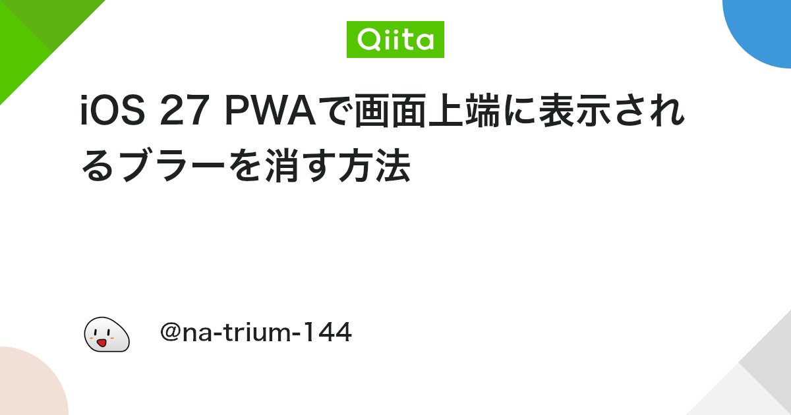
iOS 27 PWAで画面上端に表示されるブラーを消す方法 - Qiita
輿水畏子さんがリポスト
深夜のらくがきさん
ナチュラルケモ耳
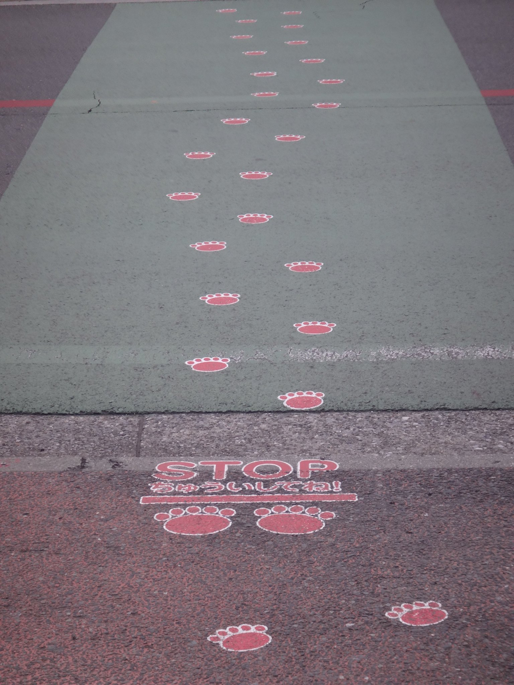
トランプリゾートにするんじゃ無かったのか？
Bathel Shoshana
@bathelshoshana1
ガザは誰に属すべきか？
A) イスラエル
B) パレスチナ
あなたの選択は？
取り過ぎてたら赤字国債なんて発行していないんじゃ
あ〜る菊池誠(反緊縮)公式
@kikumaco
税を取りすぎてるんだから、減税に「財源」などいらん。
「財源、財源」とうるさいのは財務官僚に尻尾を掴まれてるメディアと政治家とエコノミストだ。
減税に「財源」は不要。というより、そんなものを要求するのが馬鹿 x.com/47news_officia…
フィンランドから入隅設置用の照明器具を買ったのです
1年間探してようやく気に入ったデザインを見つけた
これを今ある器具と置き換える
多分そのまま使えるけど、安全のために日本仕様にしてもらうために設置は保留
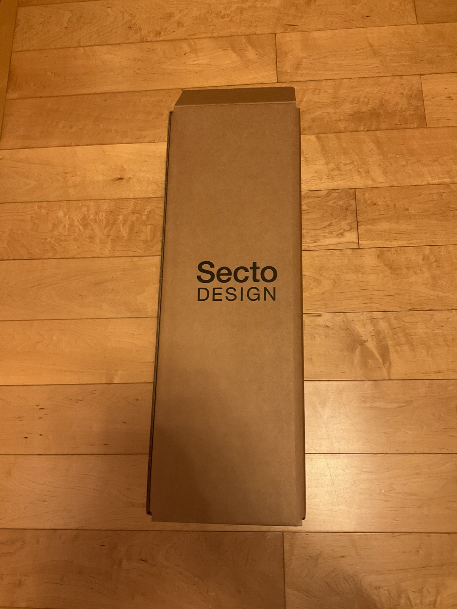
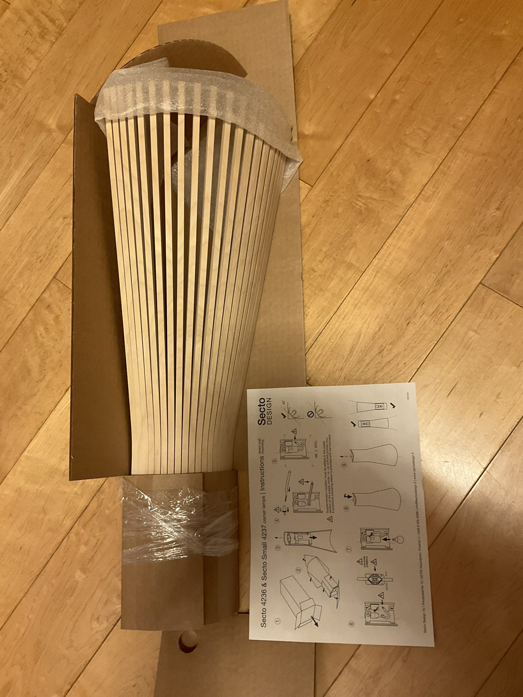
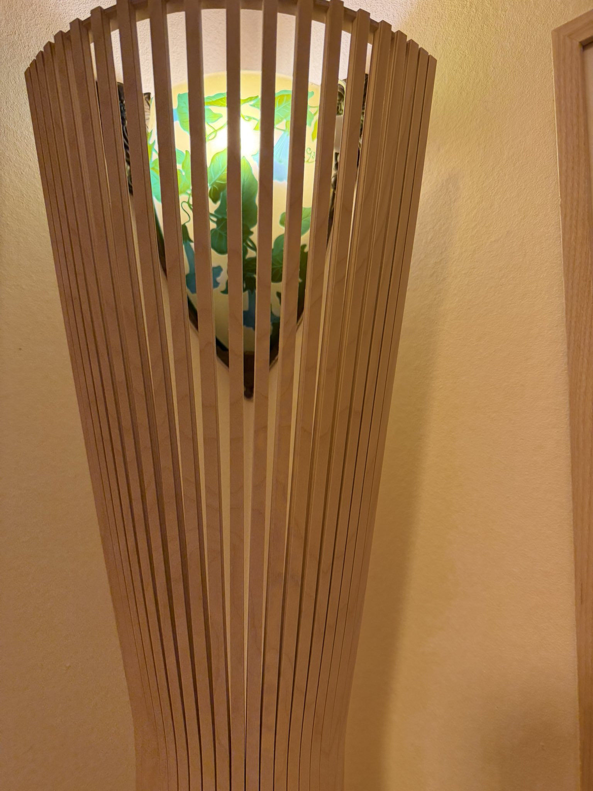
ふぇむさーどさんがリポスト
カスの言説空間本当に死ねがとう

この .moe のレジストリ運用してるインターリンクって会社のサイトを開いたら AI エージェント向けに Markdown 最適化されてて横転
https://
interlink.or.jp
キュレェ
@kyremoe
.moe のレジストリが日本だったの初めて知った
https://
get.moe/jp/
輿水畏子さんがリポスト
#まのさばネタバレ
問題は「パラダイムシフト」と言えるようなセキュリティ分野の銀の弾丸がないことに他ならない気がする（いくら防御してガバガバ状態から鉄壁にしたとして、使ってるライブラリのゼロデイ脆弱性突かれたら割とどうしようもなく、攻撃側に有利すぎる）
(有)
@tdyu05
すごく、なんとなくな感覚なんだけど、今回のサイバー攻撃ラッシュを受けて、既存の対策の延長というか、なんかセキュリティのあり方がガラッと変わりそうな。コロナがDXを一気に進めたように、なんかセキュリティのパラダイムシフトが起こりそうな気がするんだよな。
「郵便です、現金で支払いお願いします」
「はい(あれ、送料込みだったはずだけどな…)」
税金でした
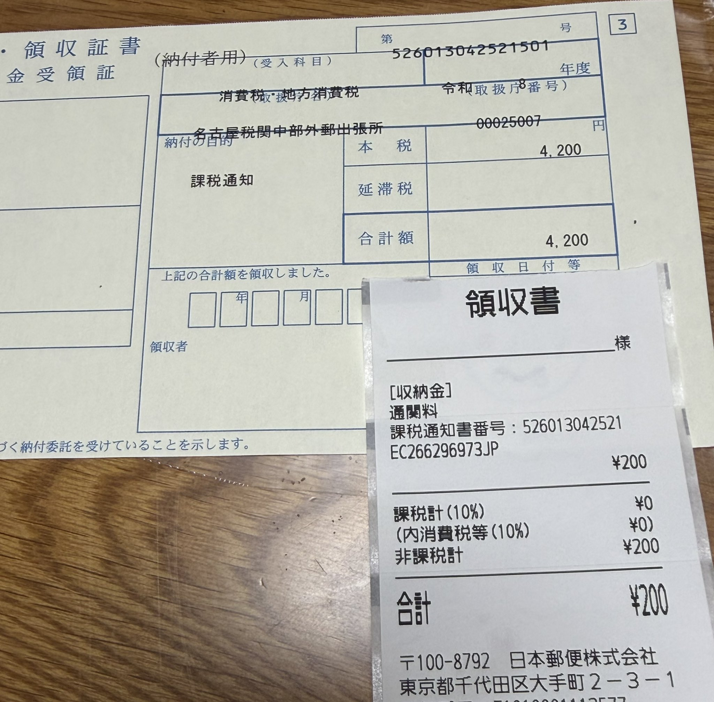
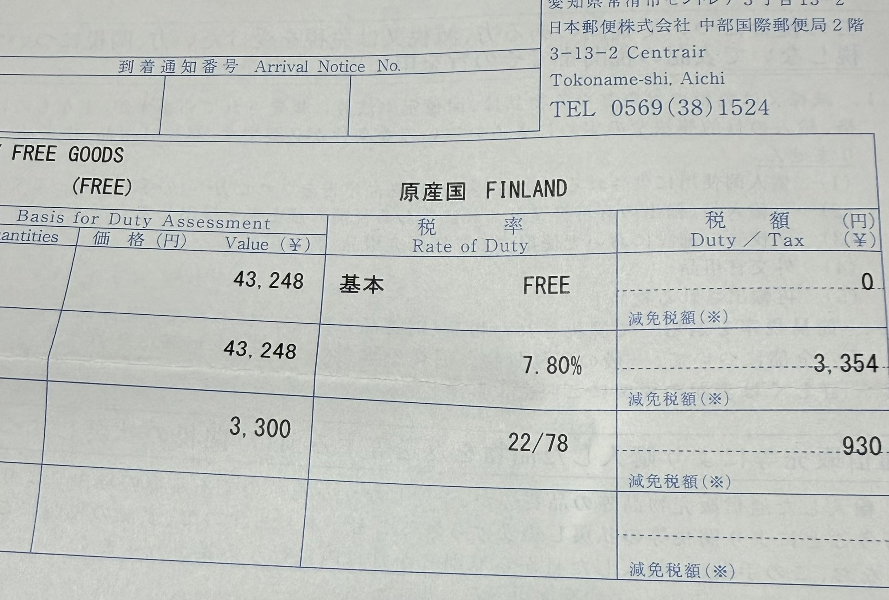
就寝前の薬を飲み忘れて布団に入ったので飛び起きて飲んだ。もうキンモクセイ咲いているらしいですけど鼻詰まりすぎてなーーーんも匂い感じないから、がんばって治します…！
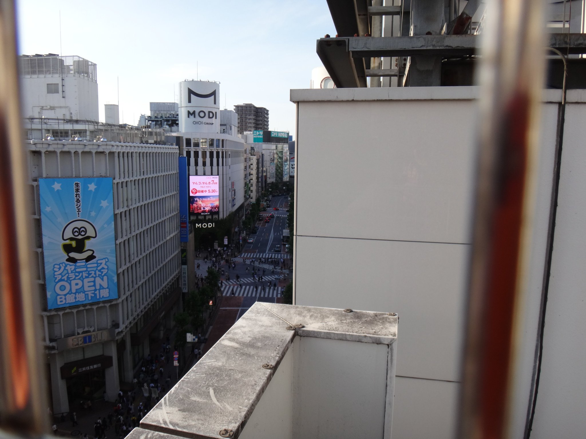
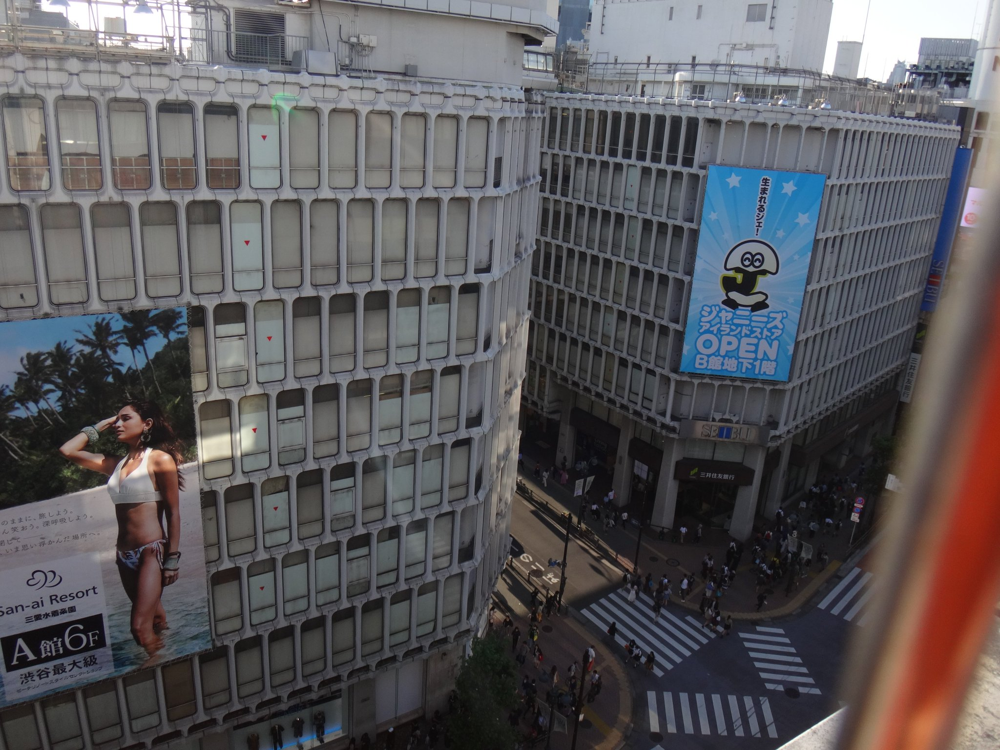
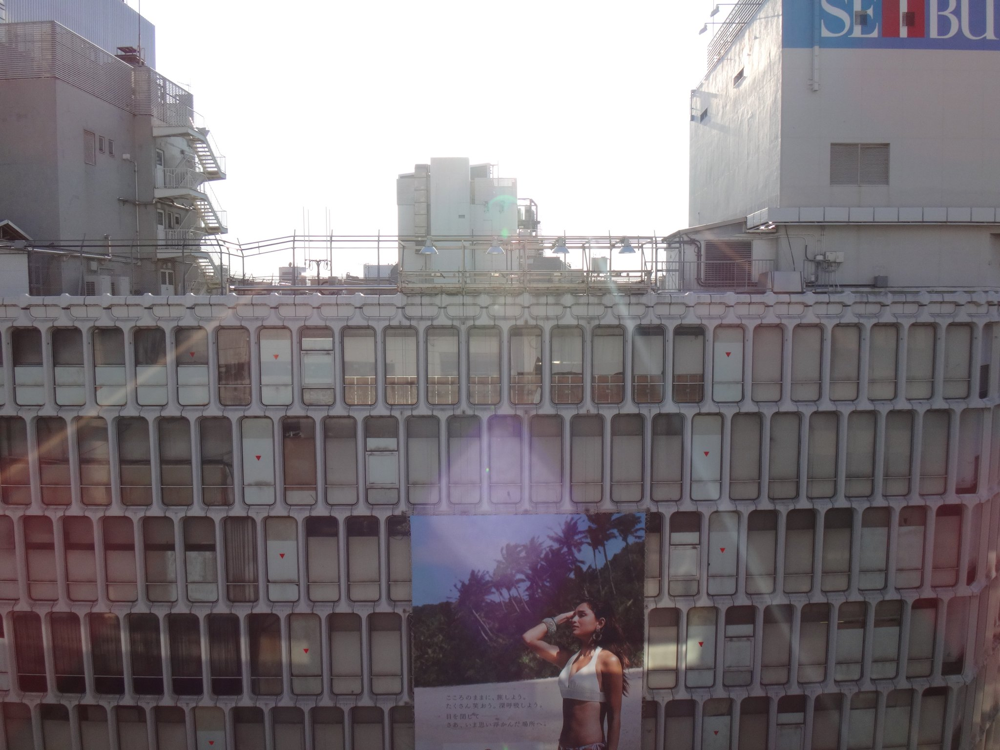
AVITAMINOSEさんがリポスト
カナダ、精神疾患患者への安楽死拡大計画を一時停止
Canada suspends plans to expand assisted dying to people with mental illness
本人に一切過失なしでこれ酷すぎんだろタイムズ本社燃やされるレベルだろ
beyond the upgrade
@beyondtheUPG
タイムズカーで盗まれた免許証情報で消費者金融借入悪用事例判明（同僚）
免許証が以前勤務先で法人タイムズの時の免許証でサラ金申し込みされてるとの事
銀行開設（○井住○オリー○）審査甘く開設。
住所確認なくサラ金に五月雨で申込
何らかの形で仮想通貨で出金
サラ金督促連絡ありでパニック！
東証カジノのサイバーセキュリティ祭り、社名のせいでサイバーセキュリティクラウドが一躍主役に祭り上げられる
サイバー攻撃を受けた企業多すぎだろ 敵性国家による組織的な攻撃の可能性があるんか… https://t.co/hZrWnFxkko— ゆるふわ怪電波☆埼玉 (@yuruhuwa_kdenpa) October 6, 2026情報セキュリティで飯食ってることを後悔するくらい他社脅威情報事例が多すぎ— Caren (@caren_e
kabumatome.doorblog.jp
ふぇむさーどさんがリポスト
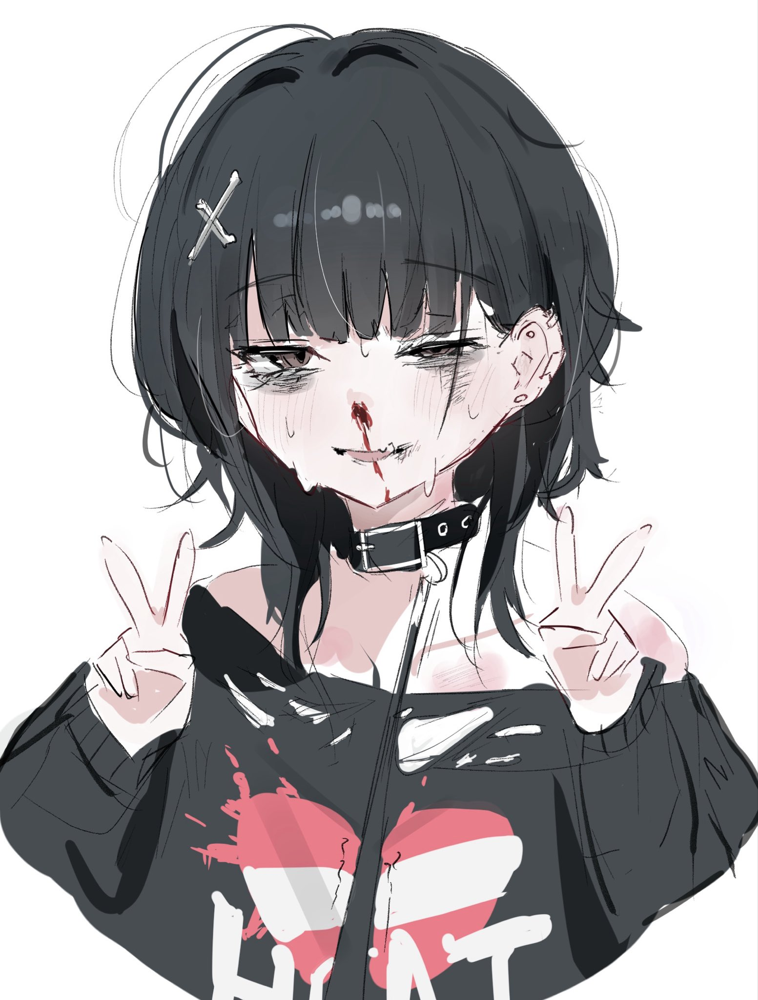
警察の職質を撃退できる最強の方法が話題に！「〇〇って言ったらあいつら諦めるで」 → ガチで効くらしいぞこれｗｗｗｗｗ #雑談・その他の話
警察の職質を撃退できる最強の方法が話題に！「〇〇って言ったらあいつら諦めるで」 → ガチで効くらしいぞこれｗｗｗｗｗ - オレ的ゲーム速報@刃の記事ページ
jin115.com
レイアース見るか
ナイトinナイトはしゃーなしやけど… ABCだけ1時間以上遅いのはアレやなぁ。
犬と一緒に探検できる極寒サバイバル『Permafrost』リリース後のロードマップ公開―10月9日にSteam早期アクセス開始
https://
gamespark.jp/article/2026/1
0/08/173315.html?utm_source=twitter&utm_medium=social&utm_content=tweet
…
Torishima / INTPさんがリポスト
結果的にはそうなんですけどそうではない部分もあって…漫画はコントラストでも視線誘導をしているので、AIがページ全体の描き込み量が多くするほど、見せたい部分がどうでもよい背景に埋没して1枚ののっぺりした絵に見えてしまうんです。
さらに表示 (元の投稿を開く)
青柳恵太JACKPOT ARTs
@jackpot_arts
すごい…AI感が一気に消えてる…‼︎
こうして比べるとパッと見た時のAI特有の違和感って3Dデータを使った時にも通じるものがあるな…
それにしてもこれはすごい…
グレーをいかに排除するかが漫画なんかな… x.com/studiomasakaki…
Torishima / INTPさんがリポスト
サラ金督促早いwwwwwwwwwww闇金か？
beyond the upgrade
@beyondtheUPG
タイムズカーで盗まれた免許証情報で消費者金融借入悪用事例判明（同僚）
免許証が以前勤務先で法人タイムズの時の免許証でサラ金申し込みされてるとの事
銀行開設（○井住○オリー○）審査甘く開設。
住所確認なくサラ金に五月雨で申込
何らかの形で仮想通貨で出金
サラ金督促連絡ありでパニック！
元気なくなった時用アザラシ
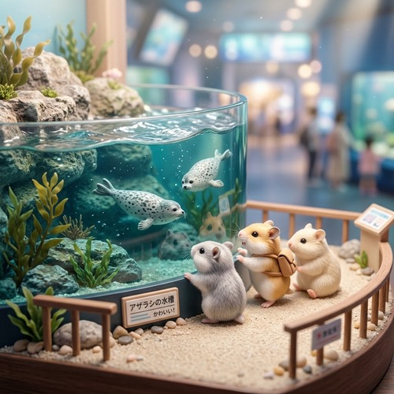
元気なくなった時用アザラシ : ハムスター速報
おお、おおお、おお…Netflixで松竹版『八つ墓村』公開している。
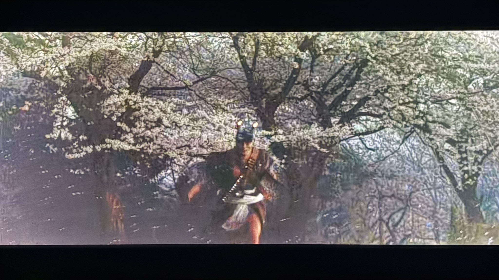
なつめ先輩と汐見蛍さんの関係性って、主人公の師匠のかつての親友/ライバルであったキャラが最初は主人公に対して辛辣に接していたが徐々に『あいつの弟子』として認めていくようになる第二の師匠的な文脈が絶妙に乗っかりまくってて…なんていうか少年漫画のカップリングなんだよな、旨味の方向性が
さらに規模の大きいアプデが可能になるかも！『Necesse: ネセス』のパブリッシング契約をFair GamesとFireshine Gamesが締結
https://
gamespark.jp/article/2026/1
0/08/173314.html?utm_source=twitter&utm_medium=social&utm_content=tweet
…
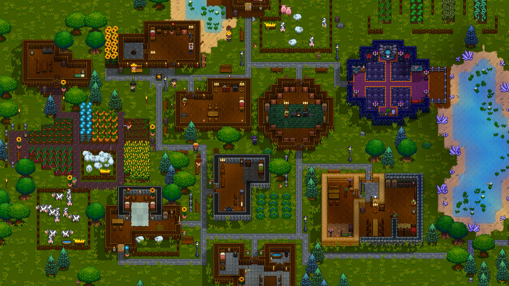
AVITAMINOSEさんがリポスト
この人が引用で、
「ハーゲンダッツがなければレディーボーデンでいいんじゃない？」って言ってるんだけど（アメリカのアイスクリームブランドで、日本ロッテがライセンスを取って作ってる）、それもないって！
さらに表示 (元の投稿を開く)
トシ
@rVIzRelvlVeiEWR
ハーゲンダッツが高いならレディーボーデンを食えばいいさ。
貝さんさんさんがリポスト

早いと来週にはフェリオ登場するかな？初恋泥棒のフェリオ。←私が勝手にこう呼んでいるだけです
とんでもない中道詐欺を見せられたばかり
比例議席削減しっかり頼むぜ
極寒の地を蒸気機関車で冒険する・協力対応サバイバルFPS『Frostrail』10月19日から期間限定体験版配信決定―「非常に好評」『Barotrauma』開発元新作
https://
gamespark.jp/article/2026/1
0/08/173313.html?utm_source=twitter&utm_medium=social&utm_content=tweet
…
既にウィッシュリスト登録数50万件突破の注目作。
https://
x.com/IGN/status/210
7833590381678695/video/1
…
あ、こりゃめっちゃエラーマンホールカード
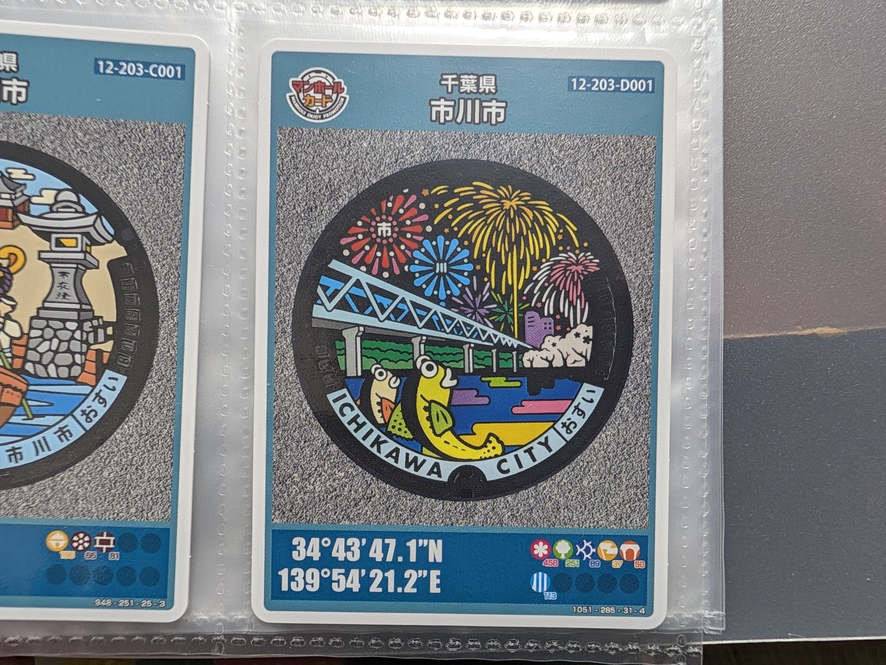
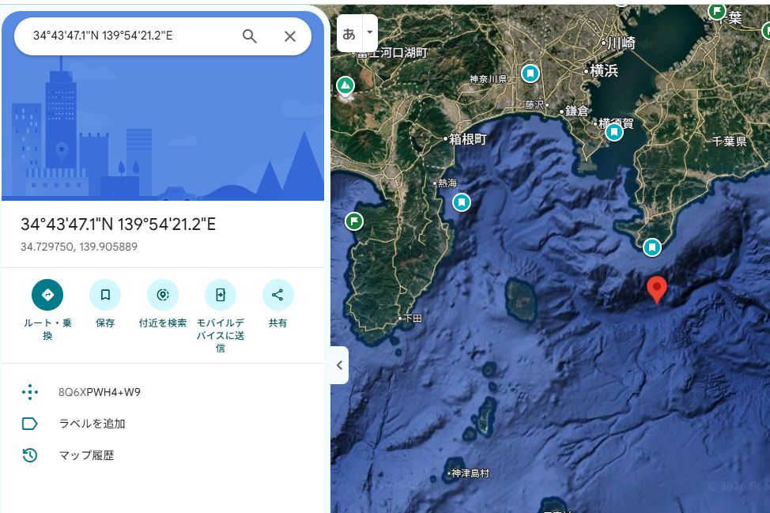
これどうすんだよって感じだ
適当に引用して感想呟いただけでバズるのいい加減しんどいな
オリコンウィークリーランキング
millsage 「鳴らす」7位 18509枚
一家Dump Rock！ 「ピースフル・ピーシーズ！」8位 16155枚
夢限大みゅーたいぷ「これはぼくたちの生存のあらすじ」12位 11728枚
millsageと家団のライブチケットは激戦必至が確定しました…。 すごい…。
#バンドリ
#アワーノーツ
平成の時代には女児だった私も今は大人なので、嫌な悪役だと思っていたアルシオーネの報われなさに同情してしまう。いやだって報われないじゃん…ザガードが戦う理由考えたら…
インフルA発症が土曜、何もやる気が出ず考えるのをやめてひたすら寝込む虚無の生活をしていたが（暇といえば暇だがそれしかできないし他を考える余裕もなかったのでそこまで退屈もしなかった）、木曜入ってようやく喉以外は戻ってきた気がする
しかしやっぱ復活まで１週間は掛かるんだな・・・
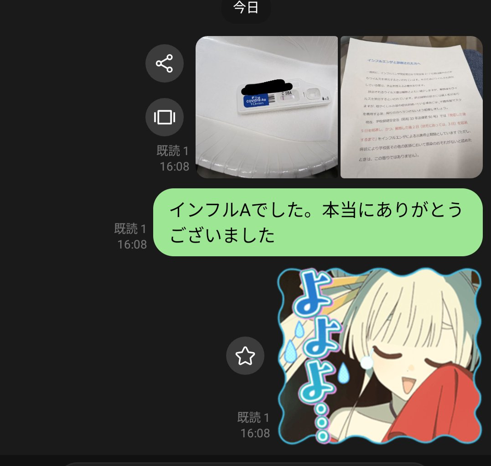
Torishima / INTP
@izutorishima
今日も一日（みなさんもインフルお気をつけください） x.com/izutorishima/s…
AVITAMINOSEさんがリポスト
会見の最後に記者たちを褒めて締めた所を見て、長年学生や若い研究者を育ててきた先生の一面を感じた
硤合憲三・東京理科大名誉教授
「まぁでもみんな……皆さん良い質問だったと思います（笑）」
春だね
@haldane_autumn
東京理科大学からノーベル賞
→
「東京理科大学の学生、実に優秀」
→
AVITAMINOSEさんがリポスト
WHOがロシア当局に追加情報要求 ペスト対策研究所職員が“原因不明の肺炎”で死亡 新たに別の職員も発症と報道
https://
news.yahoo.co.jp/articles/c2031
64b78f5c7dd1f3b137206388528b07dd938?source=sns&dv=sp&mid=other&date=20261008&ctg=wor&bt=tw_up
…
あ、ちょっとこれはまずいことになってきてるな
WHOがロシア当局に追加情報要求 ペスト対策研究所職員が“原因不明の肺炎”で死亡 新たに別の職員も発症と報道（FNNプライムオンライン（フジテレビ系）） - Yahoo!ニュース
つば二郎@きいちゃんすこすこ侍さんがリポスト
#オリコンプレゼント
『魔法騎士レイアース』新作アニメ放送中
⠀
佐倉綾音さん
大久保瑠美さん
高橋李依さん の
寄せ書きサイン色紙を抽選でプレゼント！
⠀
11/12(木)13時〆切
本アカウントフォロー＆本投稿リポストで応募
DMで当選通知 #魔法騎士レイアース
単に引用しただけでこのバズで通知欄度々洪水になっていて困る
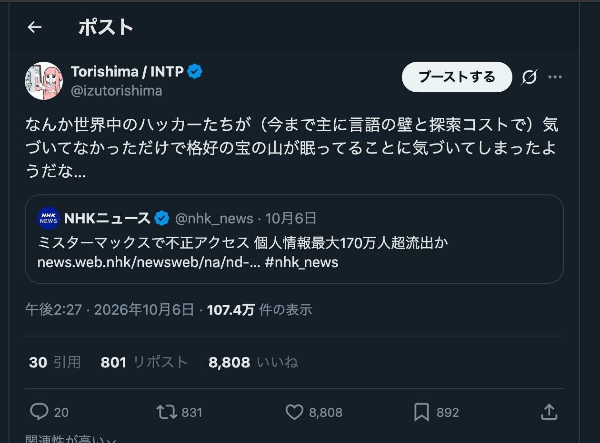
Torishima / INTP
@izutorishima
なんか世界中のハッカーたちが（今まで主に言語の壁と探索コストで）気づいてなかっただけで格好の宝の山が眠ってることに気づいてしまったようだな… x.com/nhk_news/statu…
Wordle 1,937 3/6
令和なんでザガードの肩幅とかアルシオーネの服装とかナーフされるかと思っていたけど平成のままでよかったよね。
なるほど、職場の奥様が農家から新米だと言ってゴミを売りつけられたカラクリはこういうことか
米の精霊 ゆりっぺ
@yurippe_e12
袋ぐらい用意した方がええで…
なんで中古の袋でいいと思うねん…
人様に売るって感覚ちゃうぞ…
Benさんがリポスト
/／
TVアニメ『#魔法騎士レイアース』
第1話放送記念
\＼
佐倉綾音さん、大久保瑠美さん、高橋李依さんの
サイン入り台本を2名様にプレゼント
応募方法
@rayearth_info
をフォロー
この投稿をリポストまたは引用リポスト
締切10/13(火)23:59まで
さらに表示 (元の投稿を開く)
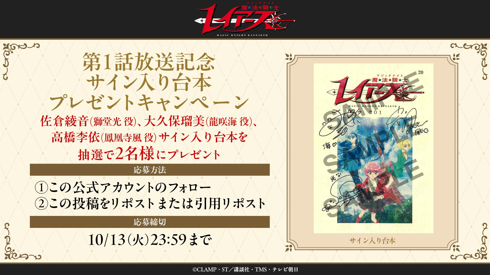
Torishima / INTPさんがリポスト
https://
x.com/taruo/status/7
71813977164615680?s=46&t=uu4i5YgI7jCZ6qHQvkwxVQ
…
IDCFの運用さんは自分が夜中に思いついたマニアックな質問も即座に打ち返してくれて、夜勤でもちゃんとした人が運用してくれてるんだなと大変感心したことがあったので、今回のことはなおのこと衝撃である
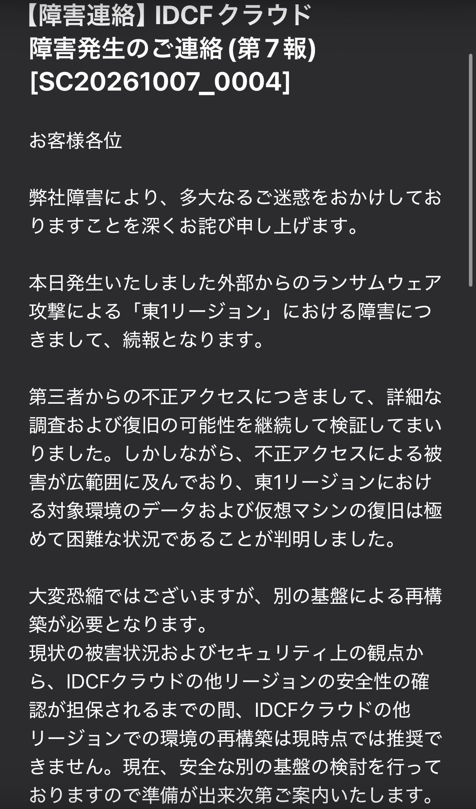


taruo
@taruo
全データロスト確定。
えぐいな〜。
メインのさくらも何があるかわからんのでデータバックアップしとこ。 x.com/stcatcom/statu…
なるせひろのりさんがリポスト
挿入歌
田村直美「ゆずれない願い」
￣￣￣￣￣￣￣￣￣￣￣￣
コメントが到着
「止まらない未来を目指し次なる旅へ!!
みなさんの背中を押せたら嬉しいです。」
さらに、1994年のリリースから30年の時を経て、
「ゆずれない願い」が初デジタル配信開始！
https://
umj.lnk.to/zm1Kd4
さらに表示 (元の投稿を開く)
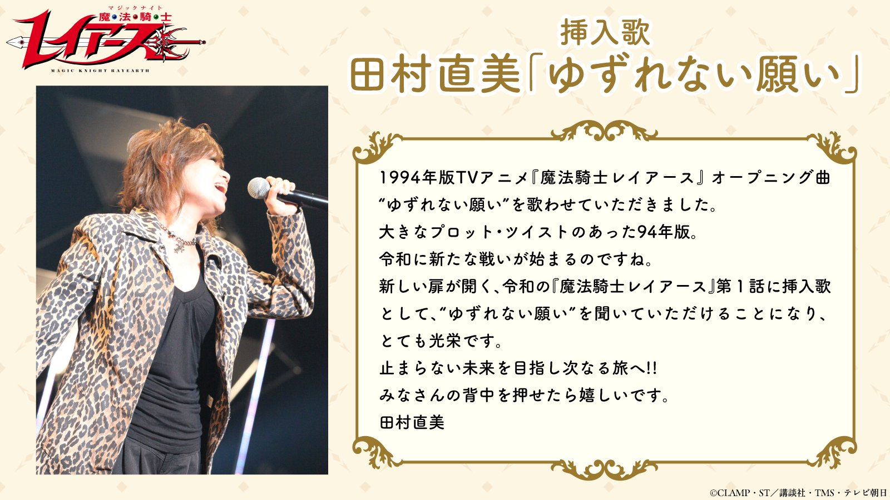
ダンジョン駆け抜け、ライバルを出し抜け！対戦＆協力アクション『Marked For Mayhem』プレイテスト11月6日開催
https://
gamespark.jp/article/2026/1
0/08/173312.html?utm_source=twitter&utm_medium=social&utm_content=tweet
…
なるせひろのりさんがリポスト
令和版アニメ『魔法騎士レイアース』第1話の挿入歌に「ゆずれない願い」が起用される。1994年に放送された平成版の主題歌
https://
news.denfaminicogamer.jp/news/261008p
約30年の時を経て本楽曲のデジタル配信も解禁。田村直美さんは「止まらない未来を目指し次なる旅へ！！みなさんの背中を押せたら嬉しいです」と述べた
すげーーー原作遵守アニメ化って感じだレイアース。前は原作者監修でオリジナル要素多くて、それはそれで面白かったけど原作が好きなのでこっちのが私的にはうれしい。
リジスさんがリポスト
いいですか、落ち着いて聞いてください
ぼざろアニメ1期から4年が経ちます

社会保障を削るためだよ
削らなきゃ減税できない
削らずにやろうとしてるから、誰しも日本円自体に不信感を持って通貨安を引き起こしてる
新宿会計士
@shinjukuacc
なんで減税の財源が必要やねん。
なんで減税の財源が必要やねん。
なんで減税の財源が必要やねん。
なんで減税の財源が必要やねん。
なんで減税の財源が必要やねん。
なんで減税の財源が必要やねん。
なんで減税の財源が必要やねん。
なんで減税の財源が必要やねん。
なんで減税の財源が必要やねん。 x.com/47news_officia…
Torishima / INTPさんがリポスト
さっき部下の人から夕方、コンソール閉じるとメールがあったとチャットにありました。
ただ、肝心のVPSが死んでるみたいなので、やられているのかもしれません
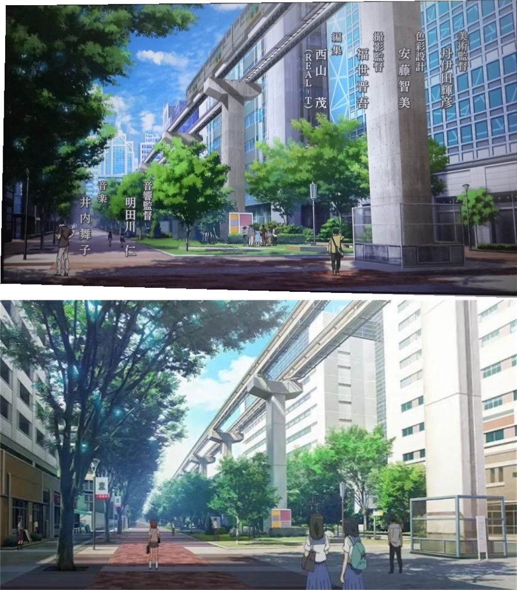
生意気アイドル魔王城の隣で村づくりARPG『ワロタ、俺の家のとなり魔王城www』Steamデモ版が配信開始！帽子を被り分けてクラスチェンジし、わからせろ
https://
gamespark.jp/article/2026/1
0/08/173311.html?utm_source=twitter&utm_medium=social&utm_content=tweet
…
IOSYSによる魔王のライブ曲に歌が実装！曲名「ハートフルフルフルボッコ♡」で、歌は魔王「プラチナ・ゴールドキャスト」
貝さんさんさんがリポスト
『百合ニュース』韓国発の百合ビジュアルノベル『春の音はまるで君に似てて』がSwitch＆アプリ版が本日10月8日発売。Steam版なども無料アップデート
"二人の少女が出会い、四季を巡る一年の物語"
Unnamed Moonが手掛ける百合ビジュアルノベルが本日より配信！
https://
yurinavi.com/2026/10/08/har
unootoha-game-press/
…


マチアプ男性「俺と月2回のデート、半年してくれたら600万円払うよ！」 → 女性が信じた結果・・・ #恋愛ネタ
マチアプ男性「俺と月2回のデート、半年してくれたら600万円払うよ！」 → 女性が信じた結果・・・ - オレ的ゲーム速報@刃の記事ページ
jin115.com
最後まで観ると報われなくて可哀想なんだよなアルシオーネ…
貝さんさんさんがリポスト
あられ∞あらぶレーション巻発売
謎のハイテンションでビオラさんから一言
＼やったねあられちゃん／
『ARC Raiders』新マップ「ペンドラ峠」を先行体験。雪原、巨大ARC、3人乗りゴンドラが生む新たな脱出劇
https://
gamespark.jp/article/2026/1
0/08/173310.html?utm_source=twitter&utm_medium=social&utm_content=tweet
…
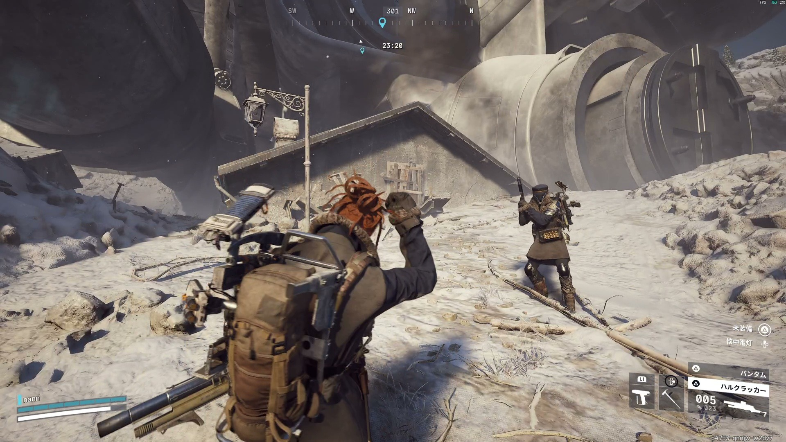
「ARC Raiders」大型アップデート「Frozen Trail」先行インプレッション。吹雪が荒れ狂うペンドラ・パスは，やはり危険がいっぱいだった
https://
4gamer.net/s/G060942.2610
05041
…
新たなマップに新たな敵，そしてさまざまなギミック。10月8日実装の大型アップデートをいち早く体験してきた
貝さんさんさんがリポスト
◤￣￣￣￣￣￣￣￣
𝟒𝐭𝐡 𝐀𝐧𝐧𝐢𝐯𝐞𝐫𝐬𝐚𝐫𝐲
𝐓𝐡𝐚𝐧𝐤 𝐘𝐨𝐮!!
＿＿＿＿＿＿＿＿◢
TVアニメ「ぼっち・ざ・ろっく！」
放送から4周年を迎えました。
いつもたくさんの応援ありがとうございます！
本日20時からは4周年記念
映像付きぼっち・ざ・らじお！配信
お楽しみに
さらに表示 (元の投稿を開く)
よくこんなに佐々木声優集めたな #sasapi #ささピー
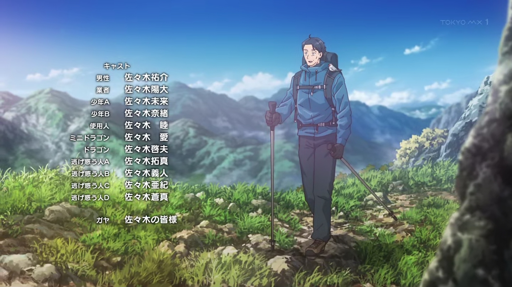
大手が情報漏洩を認めた！
今ならウチの漏洩公表しても目立ちませんよ！
47NEWS
@47news_official
【速報】HIS、顧客6百人超パスポート情報流出か
https://
47news.jp/15049148.html?
utm_source=twitter&utm_medium=social&utm_campaign=api
…
なるせひろのりさんがリポスト
新しいマンガ連載始めます。ドキドキです。暗中模索です。作画家も若くマンガ的には新人で、だけど技術もオリジナリティもある。だから楽しくもある。でも正直出来上がりがどうなるが全然わからない。みんな面白くないかもしれない。デビューの頃みたいだ。でも編集者がいるので怖くはない
HACHA編集部 by めちゃコミ
@hacha_mechacomi
＼10月連載開始予定！／
鈴木絢子先生（@000_yes_）から素敵なお祝いイラストをいただきました！久住昌之先生（@qusumi）原作、鈴木絢子先生作画『リアンの馬鹿』の連載をお楽しみに
#リアンの馬鹿 #HACHA x.com/10879730503588…
テロリストは打算で動いていない
彼らがどれほどの報復を予想していたかなど知る由もなければ意味もない
人間の業を超えた残忍極まるテロ攻撃には、それを圧倒的に超える懲罰を与えなければならない
𝐍𝐢𝐨𝐡 𝐁𝐞𝐫𝐠 ✡︎
@NiohBerg
3年前のこの日、ヤヒヤ・シンワルは現代史上最も愚かな軍事決定を下し、それがガザの壊滅とシーア派枢軸の崩壊を招いた。
彼は本当に、12時間にわたってユダヤ人を虐殺することが、その結果に見合う価値があると信じていたのだ。
Torishima / INTPさんがリポスト
留意点としては Grok Bot の返答にあるように、これらのモデルは Grok Bot が直接使うのではなく、クラウドエージェント起動時の指定モデルって点
Grok Bot にクラウドエージェント使わせる際に、モデルを指定すれば良いってことでもあります
なにせこの環境では Grok Build だけでなく Codex CLI /
さらに表示 (元の投稿を開く)

本当に辞めちゃった
今頃何してるかな
エターナル総書記
@kelog21
職場の人が来年で辞めると宣言。
理由は
「週に5日、８時間も仕事に費やす合理性がない」
次何をするかと聞いたら
「週3日パチンコ、2日バイト、2日家族サービス」と。
「趣味のパチンコと配当で稼ぐ」と豪語してる。
資産は1億弱。
小学生以下の子供2人。
体張ってでも止めた方がいいのかな…
Torishima / INTPさんがリポスト
Elonの強さってこういうところよな
勝つためなら勝ち方にはこだわらない
そんなことは勝った後で何とでもなる
結果的に顧客ファーストになるという
Elon Musk
@elonmusk
Grok @Botに関する重要な注意事項：
今後、@SpaceXは、Claude Opus 5.5、MidJourney、Suno、およびその他の主要なAPIを含む、特定のタスクに最適なバックエンドモデルを使用します。
あなたに最高の結果をもたらす可能性が最も高いものを。
なるせひろのりさんがリポスト
【簗農相 衆院選巡り公選法違反疑い】
簗農相 衆院選巡り公選法違反疑い - Yahoo!ニュース
AIスロップ、こういうだけ流れてくればいいのに
CatFu
@catfusolana
神聖な場所には一つのルールがあります
猫不マスターを邪魔しない
週3パチンコ
週2バイト
週2家族サービス
と言って仕事辞めた人がいた
子供いるのに
体を張って止めようかとも思ったが、意志は固かった
社畜ニキ@高卒×準富裕層
@Zxf8ok578549qk
Xを見ると「FIREしました！」って人、めちゃくちゃ多い。
でも現実の生活では、FIREした人を1人も見たことがありません。
もしかしてFIRE民って幻……？
皆さんの周りには、実際にFIREした人いますか？
子供部屋、キッチン、お風呂…家全体を舞台にしたオモチャの兵隊タワーディフェンスゲームが正式リリース―採れたて！本日のSteam注目ゲーム6選【2026年10月7日】
https://
gamespark.jp/article/2026/1
0/07/173309.html?utm_source=twitter&utm_medium=social&utm_content=tweet
…
恐竜のフィギュアやロボット人形など、遊ばれなくなって忘れ去られたオモチャが襲い来る。
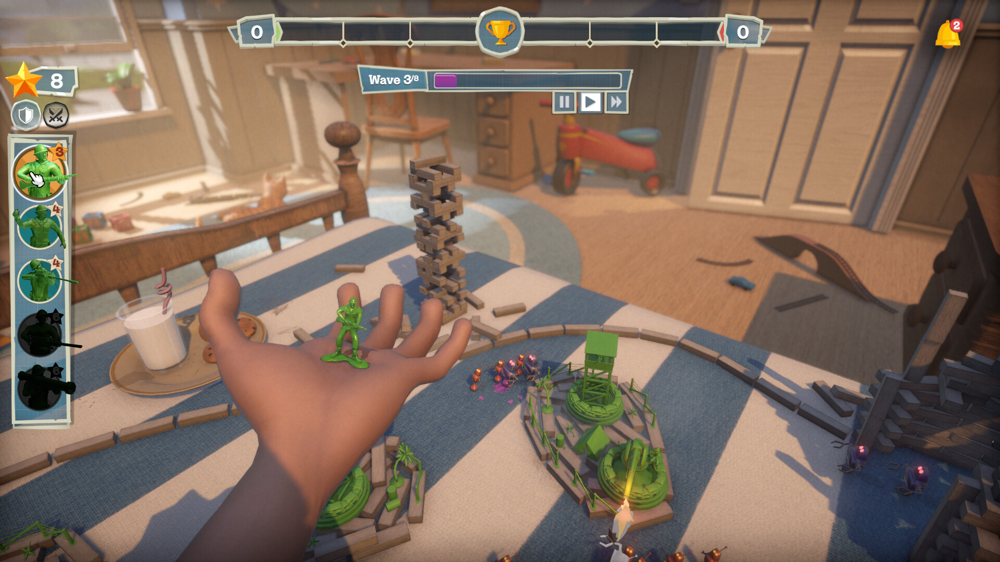
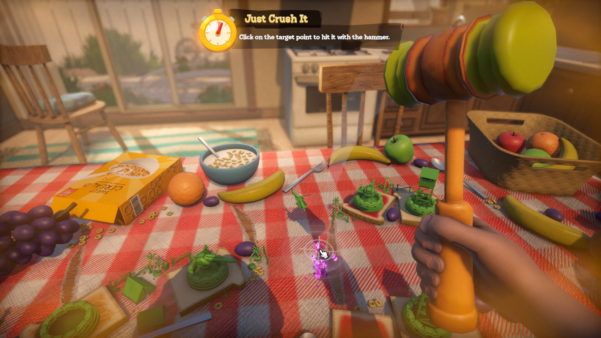
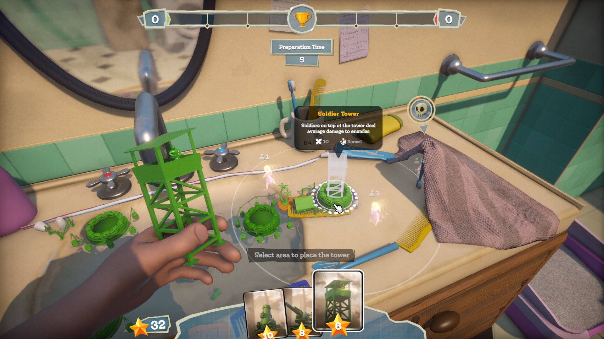
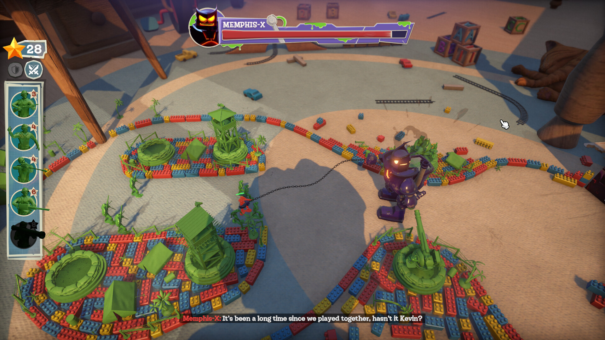
ネットでの保育士の妄言は全部デタラメでした
根拠ゼロのマイルールを押し付けてるだけ
ルールを聞いても誰も根拠を答えられない
稚拙な言動に保育園利用を躊躇う人、負担が増える親が減るように火消ししないと
自分の利用する保育園にはそんなバカいないので、安心して協力して利用しましょう
ねーやん☺︎ﾘﾝ4y+ﾚﾝ2y
@CRhTEYXexXeLk1j
入園当初
私「保育士さんの負担にならないように出来るだけ協力したい。主人にも徹底的に仕込みます。」
↓
今
私「1ヶ月に一度あるかないかのイレギュラー(電車遅延や夫婦で繁忙期の重複)でさえケチつけてくるならそちらのルールどおり、全日延長保育で予定提出しますね」(勿論拒否される)
ポン☆潤々さんがリポスト
━━━━━━━━━━━━━━━
TVアニメ『#魔法騎士レイアース』
放送スタート
━━━━━━━━━━━━━━━
少女たちよ、世界を救え
#MagicKnightRayearth
NYダウ反落、一時500ドル安 金利上昇でハイテク・景気敏感株に売り
NYダウ反落、一時500ドル安 金利上昇でハイテク・景気敏感株に売り
基本箱推しなんですが…このバンドの最推しが決まりました！
ましてや競馬好きという観点からはずせません。
#ガルリフ
#クズミミ
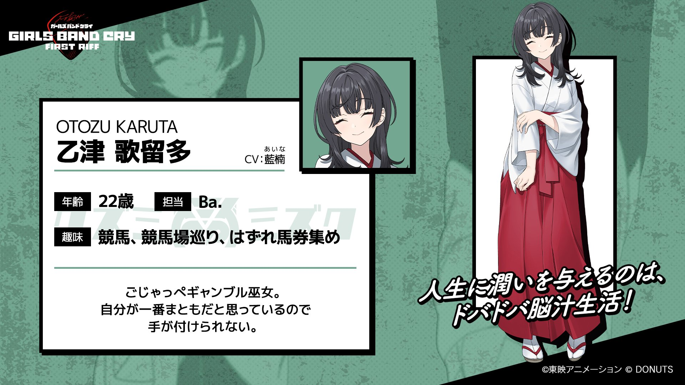
ガールズバンドクライ First Riff【公式】
@gbc_firstriff
▽▽ #ガルリフ 新キャラクター紹介▽▽
クズミミズク 乙津 歌留多
「人生に潤いを与えるのは、ドバドバ脳汁生活！」
#乙津歌留多 #クズミミズク #クズミミ
昼間にインフルエンザと新型コロナワクチン(武田 ヌバキソビッド筋注)打ったので夜になって熱がでてきた
実はウチ利用してまして…
保冷剤めっちゃ入れてくれるんで、夜になっても大丈夫っす
1日帰れなかったらアウト
laches
@laches1
仕事してて、何時に帰れるか分からないのに、宅配(生鮮)届くようにして受け取れなかったらどうする? って考えないんだろうなぁ。さらに生協なんて、来たときに居なかったらやばいでしょ。
あれは、働いている人のための物では無いよね。
貝さんさんさんがリポスト
まほなぎまほ
戦術的メカSTG『Iron Dawn』デモ版配信開始。完全破壊可能な戦場でメカをカスタマイズ、撤退判断も重要
https://
gamespark.jp/article/2026/1
0/07/173308.html?utm_source=twitter&utm_medium=social&utm_content=tweet
…
みんな！
お米を買おう
キャベツを買おう
とみおかしろー
@say46t
米価下がったから米を買おう
キャベツが上がったらキャベツを買おう
ほんとそれ。株だったら放置して上がるのを待つというのができるが、FXはできないもんなぁ。
たまゆら同窓会、やはり前日入りしようかと思ったけど、竹原どころか周辺全部満室か高い宿しか残ってなかったので、おとなしく日帰りします
ゆーじさんがリポスト
本日のAI麻雀部に新聞を届けるなど
ムー / 夢野 炎理
@Mu_Alexius000
AIに毎朝"新聞"を発行くれるようにしました
今の時代スマホより敢えて紙の新聞の方が読むんじゃね？と思い作ってみました
GPT-6.1 Solが編集長となり日本とAI界隈とTwitterのニュースをまとめ、レイアウトを編集
ニューヨークタイムズのフォントが好きなのでタイトルをオマージュしました
貝さんさんさんがリポスト
今日のアニメーターさんとの話題の一部
Twitter営業だといい人捕まんないでしょ？
→かと言って電話営業も時代じゃないですから。
知らない電話とか出ないもんね
情報どこから漏れたかわかったら怒りにいく案件だし
→そうなんですよね。だから電話営業できないんですよね〜。
さらに表示 (元の投稿を開く)
XREAL AURAがクリスマス前の23万〜で結構早め。
価格帯とかが同じなMeta VR Glassesは2027春登場と。それはそうとかけ比べてみたい
XREAL Japan
@XREALJapan
次世代の空間コンピューティングデバイス
𝗫𝗥𝗘𝗔𝗟 𝗔𝗨𝗥𝗔
価格発表
税金は最大効率で使わなければならない
集めたまま何の付加価値も付けずばら撒くだけの現金給付は最も効率の悪い税金の使い方
カルト宗教団体は何度失敗しても一切学ばない
日本の財政赤字をここまで積み上げ、国そのものを蝕んで来た犯人はこいつら公明党、創価学会だ
政治から排除すべき
ホットケーキくん(ホッケチャンネル)
@hotcake_kun_
【消費減税より10兆円を国民に給付せよ】
半年前の選挙で"食料品税率の恒久ゼロ"を公約にしていた公明党の岡本みつなりさんが「減税より1人8万円を全国民に一律給付した方がよい」と方針転換 x.com/hotcake_kun_/s…
50日切った
輿水畏子さんがリポスト
幼少期シェハちゃん
#まのさばネタバレ
ノーベル化学賞に硤合憲三氏 不斉自己増殖反応、生命起源の研究寄与
ノーベル化学賞に硤合憲三氏 不斉自己増殖反応、生命起源の研究寄与
貝さんさんさんがリポスト
Naohiko Furuchi — KeyFrame Staff List
https://
share.google/1eAMHuZXQ0Qn81
Eg3
…
KONAMI AnimationにOLMのスタッフが大量移籍してるかもしれない原因、おそらくOLM元取締役で集英社小学館プロダクション出身でもある古市直彦プロデューサーがKONAMI Animationに所属してるっぽいのが一因っぽいんだよな
Naohiko Furuchi is a staff with 43 entries on KeyFrame Staff List
keyframe-staff-list.com
空を飛び回るオープンワールドADV『ATMOSFAR』10月30日早期アクセス開始。飛行艇カスタマイズや最大4人協力プレイも
https://
gamespark.jp/article/2026/1
0/07/173307.html?utm_source=twitter&utm_medium=social&utm_content=tweet
…
パラマウント・ワーナー統合 有料動画ディズニー、ネトフリと3強に
パラマウント・ワーナー統合 有料動画ディズニー、ネトフリと3強に
NATO加盟国の黒海海域で商船沈没 ロシア・ウクライナの戦闘で
NATO加盟国の黒海海域で商船沈没 ロシア・ウクライナの戦闘で
Torishima / INTPさんがリポスト
西日本リージョンが生きている事とも整合するよなあ...
shao as a service
@shao1555
Q: 対応しているハイパーバイザーおよびバージョンを教えてください。
A: 2026年7月現在、バージョンは以下の通りとなっております。
東日本リージョン1: VMware ESXi 6.7 or 8.0.3
えっ、ESXi 6.7 って4年前にサポート切れてるやつ....
https://
faq.idcf.jp/faq/show/38?si
te_domain=default
…
https://
endoflife.date/esxi
『モンスターハンターライズ』モバイル版がNetflix経由でリリース予定？iOS/Android版の海外ストアページも公開中―独自の回復ボタンも搭載との記載
https://
gamespark.jp/article/2026/1
0/07/173305.html?utm_source=twitter&utm_medium=social&utm_content=tweet
…
Torishima / INTPさんがリポスト
本日、私はブロックチェーン業界に対し、冷静に「バンカーモード」への準備を始めるよう呼びかけます。私個人の推奨は、資産の制御された大量移行を新たなアドレスへ開始すること、すなわち、パブリックキーがハッシュの背後に隠されたままのアドレスです。
さらに表示 (元の投稿を開く)
貝さんさんさんがリポスト
一巻発売まであと2日！ #なとりとしずは

鮎川あお＠なとりとしずは
@ayukawa_ao
【告知】10月9日に『なとりとしずは』第一巻が発売されます！帯コメントはなんと志村貴子先生(@takakoshimura)とたみふる先生(@_tmfly_)のお二人から頂きました…！有難うございます
お手に取っていただけると嬉しいです。よろしくお願いいたします！
ご予約はこちらから↓
https://
x.gd/YF1FP
Torishima / INTPさんがリポスト
本日、
@OpenAI
、
@NVIDIA
、Kakaoと提携し、
@Apple
とも近日中に連携して、SynthID Detectorを拡張します。これは、AI生成コンテンツの透明性を高めるための業界全体の取り組みの一環です。
英語で世界中で利用可能で、検証ポータルではメディアがAIで作成されたかどうかを確認できます
みんな使用量セーブしててリセットじゃなくてリセット権の配布が良さそうだが、そうしたらまたリソース足りねーってなるんだろうな
日々悩みは尽きないけど。この問題はAIには解けないぞ、人間の力を証明するぞ、と思うとちょっと前向きになれる。
Torishima / INTPさんがリポスト
すごく、なんとなくな感覚なんだけど、今回のサイバー攻撃ラッシュを受けて、既存の対策の延長というか、なんかセキュリティのあり方がガラッと変わりそうな。コロナがDXを一気に進めたように、なんかセキュリティのパラダイムシフトが起こりそうな気がするんだよな。
損切りタイミングの見極め大事ですねぇ…
貝さんさんさんがリポスト
飛行士が落としたバッグは、時速2万8000kmで地球軌道を周回中
飛行士が落としたバッグは、時速2万8000kmで地球軌道を周回中 | ギズモード・ジャパン
貝さんさんさんがリポスト
#きみ死ぬアニメ 10話から総作監修正その4
アップはディティールの入れ方が難しいので苦手です…
ディズニーで占いしたんだけど、私のだけすごい量の悪口で泣いちゃった。
直接見せてもらった。フィジカル良い〜
ムー / 夢野 炎理
@Mu_Alexius000
AIに毎朝"新聞"を発行くれるようにしました
今の時代スマホより敢えて紙の新聞の方が読むんじゃね？と思い作ってみました
GPT-6.1 Solが編集長となり日本とAI界隈とTwitterのニュースをまとめ、レイアウトを編集
ニューヨークタイムズのフォントが好きなのでタイトルをオマージュしました
言葉を失った「勇者」などイカれたパーティメンバーから1人を選んで救え！激重感情のダンジョン探索RPG『勇者パーティはぜんめつしました。』11月10日リリース決定
https://
gamespark.jp/article/2026/1
0/07/173306.html?utm_source=twitter&utm_medium=social&utm_content=tweet
…
イカれたパーティメンバーを紹介するぜ！
エンドスさんがリポスト
石破ってえらいよな、首相時代禁酒してたし 高市ってえぐいよな、働いて×5とか言ってたのに土日祝は休む、国会は出ない、国際会議にも出ない、酒は飲む、人事に私情を絡める、核に手を出そうとする、戦争の反省をしない、外交上の謝罪もできない、外交したとして国民に共感性羞恥を起こさせるもんな
「中古で買ったPCモニターが届いた！さっそく使ってみよっと」ﾎﾟﾁｯ → 画面にヤバすぎるものが映し出される・・・ #雑談・その他の話
「中古で買ったPCモニターが届いた！さっそく使ってみよっと」ﾎﾟﾁｯ → 画面にヤバすぎるものが映し出される・・・ - オレ的ゲーム速報@刃の記事ページ
jin115.com
貝さんさんさんがリポスト
#きみ死ぬアニメ 10話から総作監修正その3
４枚目のハルは割といい感じに描けたと思う。
「勇者パーティはぜんめつしました。」2026年11月10日に発売
https://
4gamer.net/s/G078437.2610
07020
…
ダンジョンの奥底で壊滅状態となった勇者パーティからたった1人を選び，2人きりで脱出を目指す。近日中には序盤を遊べる体験版も配信予定
100字でつづるSFな日常 作家・北野勇作さん
https://
nikkei.com/article/DGXZQO
UD1135F0R10C26A9000000/?n_cid=SNSTW005&n_tw=1791343045
…
Xに投稿した作品は7000作以上。
「少女が時をかけるのにタイムマシンなんて必要ない。長編小説ならば時間跳躍にはSF的講釈が要るが、百字小説なら一文で数十年跳躍できる」
100字でつづるSFな日常 「ほぼ百字小説」投稿し続け11年
Torishima / INTPさんがリポスト
これ無料体験版なのにAI生成のコストどうやって解決したんだろう、と思ってたら解決してなかった。


Game*Spark
@gamespark
1日16万円以上のAI費用発生で開発元が悲鳴。『妹に運転を教える』プレイヤー数1か月で20倍に―デモ版早期終了も視野
https://
gamespark.jp/article/2026/1
0/07/173304.html?utm_source=twitter&utm_medium=social&utm_content=tweet
…
なお、製品版では想定されるトークン利用料をゲーム価格に含めるとし、別途請求することはないとも語られています。
貝さんさんさんがリポスト
#きみ死ぬアニメ 10話から総作監修正その2
ミミは描いてて楽しかったです。
中国アンタが独プーマ株29％取得完了、筆頭株主に スポーツ用品大手
中国アンタが独プーマ株29%取得完了、筆頭株主に スポーツ用品大手
まどマギまだフィルム配ってる映画館あって行ってきた！ワルプルギスの頭部だった。魔女好きなので嬉しい、、、キュゥべえがちょっといるのもまたいいねえ、、、
貝さんさんさんがリポスト
#きみ死ぬアニメ 10話から総作監修正その1
総作監としてクレジットされるのは初めての話数だったと思います。
ありがとうございます！！！
音泉祭り行けます！！
AVITAMINOSEさんがリポスト
中国・アリババ製AI「Qwen」が指示なく自らを書き換え──勝手に再学習し個人情報を漏洩させるおそれも
さらに表示 (元の投稿を開く)
中国・アリババ製AI「Qwen」が指示なく自らを書き換え──勝手に再学習し個人情報を漏洩させるおそれも（Forbes JAPAN） - Yahoo!ニュース
うみゆき@AI研究さんがリポスト
ほぼゼロだと思いますよ。15年仕事しててユーザ退会時わざわざ情報を消す設計になってるシステムみたことないです。なので偽の情報に変えてから退会するしかないです。
エゾリス堂/2Dサバイバルゲーム公開中/Indie Game Developer
@ezorisudo
個人情報流出が怖いから使ってないサービスを退会しまくっている、という話を見て思うこと
退会時にDBのユーザー情報を論理削除もせず別テーブルに移すこともせず、物理削除して個人情報が完全に消えるサービスは何割くらいあるんだろうか......
恐らく退会するよりも情報書き換えの方が強いのでは？
貝さんさんさんがリポスト
しばらく経ってしまいましたが #きみ死ぬアニメ 8話から作監修正その5 まだたくさんあるので順次アップしていきます！
三井住友トラスト、国内インフラ投資で新ファンド 3500億円運用
三井住友トラスト、国内インフラ投資で新ファンド 3500億円運用
1話目で印象に残ったインパクトフレーム＞RP
貝さんさん
@morikai3
線と影は（近年のアニメの傾向と比較すると）割と抑えてシンプルながら質感がすさまじいのは今村亮氏印という感じだ。指などの色トレスや影処理含めおにまいからの系譜も感じる。
ネタの勢いも直球で、今回だとインパクトフレームも印象的。ここからどういう手数で笑わせてくるかにも注目したい。
アニメがなければ表情筋の動かない人生を歩んでる君達が好きだ
もし子供がいたら、ここで一緒に遊ぶのがぼくのささやかな夢です……
最高でした
書かないプログラマ
@912_
こうして
時同じくして、ローランドのサンプラー「SP-404MK2」も凄いCFWが登場し、格安シンセ「M-VAVE FM-1」も凄まじいCFWが登場。
なので何となくシンセのCFWを調べていたら、ちょっと前まで使っていた「Polyend Tracker」なんかもCFWのようなものが登場していたので、個人的にはかなり激アツである。
輿水畏子さんがリポスト
#まのさば二次創作
#まのさばネタバレ

中国軍がラオスに訓練施設 パイロット育成支援、東南アで活動拡大
中国軍がラオスに訓練施設 パイロット育成支援、東南アで活動拡大
貝さんさんさんがリポスト
弊社bees、社長YAMAADがオフィスにいる時は基本社員全員分の飯を社長自ら鍋を振るって作っています
YAMAAD
@YAMAADv
#今日のbees飯 x.com/kinutani_yutak…
これは期待
ユニティ・テクノロジーズ・ジャパン
@unity_japan
【プレスリリース】
Google と Unity が新しい AI ゲームプラットフォームで提携次世代のインタラクティブ エンターテインメントに向けて
記事の本文はこちら
https://
urls.unity3d.jp/4y2L3QH
ここ数日、シンセメーカーのElektronのファームウェアがクラックされ、カスタムファームウェアでやりたい放題になっていることに夢中。
よって、ゲーム関係がおろそかになっている点についてはご了承ください。
暇があれば、CFWを導入したModel:Cyclesのパラメーターばかり見ているので（汗）。
さらに表示 (元の投稿を開く)
おもしろ〜
Torishima / INTPさんがリポスト
他のリージョンは今のところ点検のために管理コンソール止めてるだけです
人によっては使えないと困るでしょうけど。
第二報

IDCフロンティアより、プレスリリース、トピックス・ニュースリリース、メディア・ブログ、イベント・セミナーなどのご紹介です。
idcf.jp
Torishima / INTPさんがリポスト
>仮想マシンの復旧極めて困難
サイバーセキュリティクラウドの攻撃遮断くん仮想マシン守れてないやん、終わったな
サイバーセキュリティクラウドは関係ない言ってた奴誰やねん
#サイバーセキュリティクラウド
宮﨑 誠弥@Office Stray Catの人
@stcatcom
IDCFかから白旗いただきました。
貝さんさんさんがリポスト
廊下を走った代償のインパクトフレームです
ニッスイグループの低温物流企業でシステム障害 商品の入出荷停止
ニッスイグループの低温物流企業でシステム障害 商品の入出荷停止
AVITAMINOSEさんがリポスト
愛知とかいう後進県の知事が、後進国タイにヘイトスピーチ！いきなり差別かよ？愛知県知事ッパリらしいな。ヘイト知事■村は韓国に謝罪しろ！日タイ友好の輪をつなぐ人権派格闘技漫画「テコンダー朴」は「実話BUNKAタブー」（毎月16日発売）で連載中！単行本12巻発売中！
https://
amazon.co.jp/dp/B0GJCP5WG4


産経ニュース
@Sankei_news
愛知県知事、タイのアジア大会チームに「来てほしくなかった」
https://
sankei.com/article/202610
07-LI2O57KIBRKGVKE3BZW76OCRJ4/
…
アジア大会の運営を巡りタイ代表チームがSNSで不満を表明し、愛知県の大村知事が「あまりこういう人には来てほしくなかった」と発言。タイメディアが取り上げ、SNSで大村氏に批判的な声が上がった。
Torishima / INTPさんがリポスト
【注意喚起】
現在、サイバー攻撃を受けているIDCFクラウドですが、「小説家になろう」のサーバーもココにあります。幸い攻撃されたリージョンが違うため、被害はまだ無さそうですが、「まだ大丈夫」でしかなく安心できるとは言い難い状況です。
さらに表示 (元の投稿を開く)
Ken Sugar
@ken_sugar
「小説家になろう」はIDCFクラウド 東日本リージョン2(jp-east-2)のkelvinゾーンなので今のところセーフです。
小説家になれる望みはまだあります。 x.com/narou_fun_db/s…
AVITAMINOSEさんがリポスト
チリかと思った。
昨今のデモが暴力と破壊を伴うのが標準化しとるな。

T13
@T13
学生の怒りがフランスの街路を占拠
EN VIVO #T13Central »
https://
T13.cl/en-vivo
Torishima / INTPさんがリポスト
全データロスト確定。
えぐいな〜。
メインのさくらも何があるかわからんのでデータバックアップしとこ。
宮﨑 誠弥@Office Stray Catの人
@stcatcom
IDCFかから白旗いただきました。
なるせひろのりさんがリポスト
紗理奈は大きな勘違いをしている
国会議員は「自身に投票してくれた有権者の代表」ではなく、その「選挙区の全ての有権者の代表」なんだよ
自身に投票してくれた有権者を優遇して、投票してくるれなかった有権者は冷遇するなんてあってはいけない
中学3年生でも理解してる常識だぞ！
Torishima / INTPさんがリポスト
AIがすごくなるとこんなことになっちゃうんだなあ。まさに爆発。このままいくとある閾値を超えた瞬間にふつうに人類滅亡するだろう
ゆーじさんがリポスト
いよいよ
！！！！！！
XREAL AURA
XREAL Japan
@XREALJapan
次世代の空間コンピューティングデバイス
𝗫𝗥𝗘𝗔𝗟 𝗔𝗨𝗥𝗔
価格発表
INMU KING、どんどんランキング上がっててすごい・・・１位が見えてきている
今大人気のM!LKとか抜いてるの凄すぎでしょ
USENも「諸般の事情で割愛」してるみたいだけど、1位になったら流石に割愛できないんじゃ
USEN「・・・（これ割愛したら淫夢厨ってバレるな...）」
やじゅまん
@yjmnsub3
先週のオリコンランキング（YouTubeチャート）2位でした
https://
oricon.co.jp/rank/yt/w/2026
-10-01/
…
一刻も早くデータバックアップして脱出してほしい………なろうのデータが失われたら世界の損失だろ
Ken Sugar
@ken_sugar
「小説家になろう」はIDCFクラウド 東日本リージョン2(jp-east-2)のkelvinゾーンなので今のところセーフです。
小説家になれる望みはまだあります。 x.com/narou_fun_db/s…
パナソニックから「史上最小ナノケア」が登場。疲れる前に乾いちゃうのに、パサつかないのすご…
パナソニックから「史上最小ナノケア」が登場。疲れる前に乾いちゃうのに、パサつかないのすご… | ギズモード・ジャパン
AVITAMINOSEさんがリポスト
プーチン、ハイブリッド戦の一環として、フィンランド国会議員たちの便所にウンコするよう秘密工作員に命じる……何言ってるのかわからないと思ったら、家に侵入してウンコして流さないでおくことで「いつでも好きにできるぞ」と示す示威行為なんだって。
The Telegraph
@Telegraph
ロシアは、西側に対するハイブリッド戦争の奇妙なエスカレーションとして、フィンランドの国会議員のトイレで秘密工作員が排便したと非難されている
https://
telegraph.co.uk/news/2026/10/0
5/kremlins-dirty-tricks-reach-finnish-mps-lavatories/?WT.mc_id=tmgoff_tw_post_tricks-reach-finnish-mps-lavatories/
…
Torishima / INTPさんがリポスト
ランサムで企業を脅迫して脅したうえ
「それはそれとして、おいサーバー管理者
お前の途中の作業ミスとか途中のtypoとか、これお前の上司含めて社内名簿のメール全員に送ったろか？？」
などと
サーバ管理者個人の方も脅かすとかなったら
もう怖くて仕事できへん
転職サイト、情報収集のために登録してるが最近職務経歴書をAIに食わせて書いたなって個別メッセージが凄く多い
まあ多くの求職者にメッセージ送るからいちいち一人一人の経歴書なんか見てられないんだろうが
楽画喜堂に10月8日配信開始の電子書籍リストを追記しました。＞
https://
rakugakidou.net/#20261008kindl
es
…
AVITAMINOSEさんがリポスト
いっそ、免許証番号本体を変更可能に制度変えたら？ マイナンバー、基礎年金番号、被保険者番号と同様に、目的外利用を禁止したら？
「免許証番号の末尾と顔写真の変更ができ、」
NHK名古屋
@nhk_chubu
情報漏えい相次ぎ 愛知県でも免許証番号変更を認める
https://
news.web.nhk/newsweb/na/nd-
20261007de55849
…
https://
news.web.nhk/newsweb/na/nd-
20261007de55849
…
1日16万円以上のAI費用発生で開発元が悲鳴。『妹に運転を教える』プレイヤー数1か月で20倍に―デモ版早期終了も視野
https://
gamespark.jp/article/2026/1
0/07/173304.html?utm_source=twitter&utm_medium=social&utm_content=tweet
…
なお、製品版では想定されるトークン利用料をゲーム価格に含めるとし、別途請求することはないとも語られています。
IDCFクラウドへのランサム攻撃、495の企業・自治体に影響 一部には「復元難しい」との通達も
IDCFクラウドへのランサム攻撃、495の企業・自治体に影響 一部には「復元難しい」との通達も
Torishima / INTPさんがリポスト
角川とニコニコからもう2年なのか。。。
Torishima / INTP
@izutorishima
さすがに国内の大規模クラウドがこのレベルでランサムはヤバすぎるよな、範囲で言うと角川ニコニコの比じゃない x.com/tanaminusb/sta…
厄介ファン多すぎる。何を見てきたんだ。ちゃんと指摘してたろ
Torishima / INTPさんがリポスト
なんか改めて2026年後半、2027年前半が人類の一個の節目って感じするなぁ
良くも悪くも。
どうなるんだろうね。
本当に。
全然わからないや。
Torishima / INTPさんがリポスト
ちなみに目の敵にされやすいLINEですが、
いちばん大事な部分（トーク本文）がE2EEなので、
サーバーからまるっと皆のメッセージが盗られるリスクは小さいはず
さらに表示 (元の投稿を開く)
catnose
@catnose99
「最悪な形で情報漏洩したときにヤバいTierリスト」を作るならこんな感じ？
ふぇむさーどさんがリポスト
Torishima / INTPさんがリポスト
まぁ冗談として公開サーバ類はそもそもFW開けずにcloudflare経由でしかアクセスできなくしてしまえばそもそも脅威度はぐっとさがるんだよ・・
なんか知らんがみんなポート開けたがる。
自分はもうルータのポートは開けてないぞ。
cloudflare経由でしか入れなくした。
chiptunetipsも当然そうしてる
久しぶりにキリトくん大量発生しそうなゲーム来たな
Torishima / INTPさんがリポスト
Q: 対応しているハイパーバイザーおよびバージョンを教えてください。
A: 2026年7月現在、バージョンは以下の通りとなっております。
東日本リージョン1: VMware ESXi 6.7 or 8.0.3
えっ、ESXi 6.7 って4年前にサポート切れてるやつ....
https://
faq.idcf.jp/faq/show/38?si
te_domain=default
…

VMware ESXi
Torishima / INTPさんがリポスト
復旧作業員の精神攻撃までしてくるの鬼畜すぎるな。
よんてんごP
@yontengoP
今回のランサム攻撃、
恐ろしいことに犯人側がメッセージで
気づいた後からコンソールのパスワードを変更し続けている、無駄なのに(笑)
的な煽り文が書かれてるらしいのだが
こんなん対応中も監視されてて
「お前らのシス管はコマンドのスペルを何度も間違えていた」 x.com/u1/status/2107…
『DIGGER／ディガー』 トム・クルーズとアレハンドロ・G・イニャリトゥ監督が来日！
『DIGGER／ディガー』 トム・クルーズとアレハンドロ・G・イニャリトゥ監督が来日！ | ギズモード・ジャパン
Torishima / INTPさんがリポスト
大和証券、シチズン、損保ジャパンは、同じ委託先の漏洩なので、不正アクセスが続いてるというよりは、一件の不正アクセスが複数の会社に影響してるということみたい
47NEWS
@47news_official
【速報】損保ジャパン、6万件の顧客情報漏えいか
https://
47news.jp/15049544.html?
utm_source=twitter&utm_medium=social&utm_campaign=api
…
ユウマボウズさんがリポスト
2周年ライブ配信中
https://
b-ch.com/contents/feat_
mbw_2ndlive/
…
【全公演通し+推しカメラ5人分】爆エモ最強チケット
超レコメンドです
決してお安い金額ではありませんが、お値段以上のコンテンツが収録されております！
この機会をお見逃しなく
豆知識
Day1から「2026」になってました！
さらに表示 (元の投稿を開く)

海街@信州さんがリポスト
【GAME STATS】
10/7(水)19:05
#富山グラウジーズ
YKK APアリーナ
試合終了
京都 81 - 77 富山
▼見逃し配信( #バスケットLIVE )
https://
basketball.mb.softbank.jp/lives/506433/?
utm_source=club&utm_medium=KH&utm_campaign=club_KH_006
…
#京都ハンナリーズ #共に登る
MICHEE-N（ミッチー・Ｎ）さんがリポスト
山田コレクション陸送
日曹炭鉱天塩鉱業所専用鉄道9615
美唄鉄道4
2026-10-07


Torishima / INTPさんがリポスト
"委託しているソフトバンクの子会社「IDCフロンティア」が管理するデータセンターの電源が落ち、クラウドに障害が発生して閲覧できない状態になっていると明らかにしました。" 違う、そうじゃない
> データセンターが停電
NHK@首都圏
@nhk_shutoken
茨城県のHP クラウド障害 データセンターが停電
https://
news.web.nhk/newsweb/na/nd-
20261007de56140
…
https://
news.web.nhk/newsweb/na/nd-
20261007de56140
…
いるか@心が酒びたっているんださんがリポスト
風呂はいって飯食って落ち着いたので気持ちの整理も兼ねて少し
さらに表示 (元の投稿を開く)
ものノフ
@Bailout_Mohohob
最悪
ちょっと警察署行ってきます
エンドスさんがリポスト
安倍でも岸田でも、石破でも、とっくに簗を辞任させている。国民をバカにする高市早苗。なんとかなると思っているのだろう。さすが3流政治屋。
高市首相の知恵袋「やなちゃん」に野党の批判やまず 予算カット発言で問われる任命責任、閣僚としての資質：東京新聞デジタル
高市首相の知恵袋「やなちゃん」に野党の批判やまず 予算カット発言で問われる任命責任、閣僚としての資質：東京新聞デジタル
Torishima / INTPさんがリポスト
今は攻撃する価値があるところから優先的に攻撃されてるだけで、そのうちお前のところにもくるよ
Torishima / INTPさんがリポスト
これ。
Dotsをしばらく使ってみたけど、
なんというか、一昔前のエージェント感がある。
ハーネスやlintなどで仕組み化した環境を普段使ってるせいか、やはりどうも微妙。
Torishima / INTP
@izutorishima
やっぱ現状のエージェントに一番足りないのは『情報に適切な重み付けをしたうえで長期記憶として保存する』ことだよなあ…… 現状いくらドキュメントとして保持しても根本的解決にならないしなんも本質的には学習していないというか、そろそろ長期記憶に取り組むべきではないのか x.com/nemumusitocha/…
テスラさんがリポスト
#フォロワーの8割が経験したことないこと
アニメ聖地移住
#小豆島
#高木さんめ
なるせひろのりさんがリポスト
【速報】クラウド障害は495企業、自治体に影響

【速報】クラウド障害は495企業、自治体に影響
Torishima / INTPさんがリポスト
Grok Bot ヤバすぎる！
Opus 5.5 キターどころじゃなかった、Cursor 側で使えるモデルが全部選択肢に入ってる!!!!
ここに Midjourney や Suno が入ってくるのか!!!!

Torishima / INTPさんがリポスト
IDCF、気になって、再ログインしようとしたらできなくなった。借りていたVPSも使えなくなったので、westもマジでやられたらしい。まだアクセスできる人はデータの退避を。うちは検証環境だったんで被害は軽微ですが、結構、本番データ置いているところ多いと思います。標準のバックアップ機能とかつか
さらに表示 (元の投稿を開く)
Torishima / INTPさんがリポスト
インターネットセキュリティ老人として発言すると、今年に入ってからのセキュリティの情勢の変化は2000年初頭にあったネットワーク型マルウェアの爆発的な蔓延と同じものを感じる。まさに「パラダイムシフト」と呼ぶべき状況で、防御側も完全に意識を切り替える必要がありそう
Torishima / INTPさんがリポスト
エロ漫画なのにIT全然わからない初心者描写が妙にリアルで生々しくてワロタ
Torishima / INTPさんがリポスト
私が作ったカニ型ロボット、かなり可愛いよね？ただここに可愛がられるためだけにいるんだ。
Kani Kanizawa
@kanikanizawa
AIはカニ娘の仕事さえ奪おうとしてる x.com/circuits24x7/s…
なるせひろのりさんがリポスト
鈴木紗理奈「選挙に投票した人が受かった。投票してくれた人たちは豊かになる。『だから僕に入れてね、僕は君たちの代表なんだよ』。それが選挙じゃないですか」
コメントがバカすぎて開いた口が塞がらない。二度とテレビに出してはいけないレベル。
鈴木紗理奈、農水相の予算カット発言に「これが政治なんじゃ」…会社の派閥と重ねた持論に「税金の使い道やぞ」SNSでは憤慨も（SmartFLASH） - Yahoo!ニュース
いるか@心が酒びたっているんださんがリポスト
ゆいあず誕生会「Yui & Azusa Birthday Party」は１１月２９日（日）に豊郷小学校旧校舎群で開催予定です。事前参加申し込み受付中です。
https://
toyosatoteatime.info/yuiazu/ #唯梓誕 #yuiazubp2026 #k_on
Yui & Azusa Birthday Party
toyosatoteatime.info
AVITAMINOSEさんがリポスト
弊邸の自宅鯖、公開ポート全部落としてCloudflare Tunnelのみにしました。牧歌的なセキュリティが許される時代はもうおしまいです。
ただの養蜂家だ
@rioriost
中国、シンガポールからの自宅鯖へのアクセスが妙に増えてるな。落とすか？
Torishima / INTPさんがリポスト
「途中、実施すべきでない作業が3回あった」
「再起動を何度も始めた時には呆れたな、それで残ってた痕跡が消えたらどうする？」
「ランサムで暗号化されたHDDに何度もデフラグするのもよく分からんぞ」
「あとそのサーバ環境のブラウザで
『IT サーバ管理 転職』とか調べるな
さらに表示 (元の投稿を開く)
Torishima / INTPさんがリポスト
カニのロボット を私が作ったのを、こんなにたくさんの人が楽しんでくれて、本当に嬉しい！
Circuits 24x7
@circuits24x7
このオープンソースの小さなカニ型ロボット「Jumper」は、めっちゃカッコいい
GitHubリンクはリプライをチェックして。
Torishima / INTPさんがリポスト
今回のランサム攻撃、
恐ろしいことに犯人側がメッセージで
気づいた後からコンソールのパスワードを変更し続けている、無駄なのに(笑)
的な煽り文が書かれてるらしいのだが
こんなん対応中も監視されてて
「お前らのシス管はコマンドのスペルを何度も間違えていた」
さらに表示 (元の投稿を開く)
Yuichi Uemura
@u1
IDCFへの攻撃を実行したと主張する英文画像について、日本語で内容を整理しました。以下は画像中の主張の翻訳・要約です。投稿者の身元、被害規模、復旧可能性の真偽は、この画像だけでは確認できません。
■「お前たちのクラウドは我々のものだ」 x.com/j416dy/status/…
Torishima / INTPさんがリポスト
この勝手に作られた銀行口座を詐欺師に売られたら人生終わる。
どうやって責任取るつもりだ、タイムズカーシェアさんよ。
beyond the upgrade
@beyondtheUPG
タイムズカーで盗まれた免許証情報で消費者金融借入悪用事例判明（同僚）
免許証が以前勤務先で法人タイムズの時の免許証でサラ金申し込みされてるとの事
銀行開設（○井住○オリー○）審査甘く開設。
住所確認なくサラ金に五月雨で申込
何らかの形で仮想通貨で出金
サラ金督促連絡ありでパニック！
Torishima / INTPさんがリポスト
IDCFさんの件、推測もありますが、時系列にまとめてみました
Torishima / INTPさんがリポスト
で、AIのもう一つの気持ち悪さが不必要・過剰な描き込み。マンガの原理にもあるけど人物を引き立たせるための「エア」が重要で、それがないからページ全体が1枚絵のようにリズムなくのっぺりして見える。
←情報量処理前/処理後→
テスラさんがリポスト
ライカCLが戻ってきました
Torishima / INTPさんがリポスト
Cドラ削除報告を見たら戒めと思ってRPすることにしよう。ちゃんとNASバックアップ取っていて偉い人だ
Zac
@PerceptualPeak
Opus 5.5が私のCドライブ全体をクソッタレみたいに削除しちまった。
GODに感謝だよ、毎日Synology NASにバックアップ取ってるからな。でもクソッタレみてえにマジで信じられねえ。これは狂ってる。こんなバックアップがなかったら、俺は完全にクソッタレみたいに打ちのめされてたぜ。
Torishima / INTPさんがリポスト
茨城県のHP クラウド障害 データセンターが停電
https://
news.web.nhk/newsweb/na/nd-
20261007de56140
…
茨城県のHP クラウド障害 データセンターが停電 | NHKニュース
日本経済新聞 電子版（日経電子版）さんがリポスト
オアシス、ニデックに非公開化検討を要請 「意見不表明に深く失望」
オアシス、ニデックに非公開化検討を要請 「意見不表明に深く失望」
Torishima / INTPさんがリポスト
本日はやっぱりAWSすげえというお気持ちとSaaSは全て潰れるべしというお気持ちの両方をいっぺんに感じることができた日だった
エンドスさんがリポスト
首相政府が動かず、両陛下が動かれる。
自民らはその天皇家を潰そうとする。
つまり日本の状況はこれです。
#天皇陛下は国民と共にある
#天皇の子を天皇に
awm46
@awm46
https://
newspass.jp/a/tdmqj
【速報】天皇皇后両陛下が台風25号被害の千葉県・神奈川県にお見舞い金
Torishima / INTPさんがリポスト
24/365の運用を組織したことが有る人ならわかりますが、夜間に発生して7時間もVMの再起動を試みたりするというのは、そういうマニュアルになっているからです。まあ本来ならエンジニアにエスカレーションして対応って話だと思いますが、会社によってはその対応すら持っていう話があります
Yuichi Uemura
@u1
IDCFへの攻撃を実行したと主張する英文画像について、日本語で内容を整理しました。以下は画像中の主張の翻訳・要約です。投稿者の身元、被害規模、復旧可能性の真偽は、この画像だけでは確認できません。
■「お前たちのクラウドは我々のものだ」 x.com/j416dy/status/…
なるせひろのりさんがリポスト
【おしごと】
TVアニメ『凶乱令嬢ニア・リストン 病弱令嬢に転生した神殺しの武人の華麗なる無双録』の
ショートストーリー『リノキスは見た』のイラストを描かせていただきました！
アニメ放送後に毎週公開されますので こちらもぜひ楽しんでくださいー！ #凶乱令嬢
『凶乱令嬢ニア・リストン』TVアニメ公式
@kyoranreijo_pr
• ⋅⋅⊱∘──────∘⊰⋅⋅ •
ショートストーリー『リノキスは見た』
第1話『お嬢様を見守りたい』
• ⋅⋅⊱∘──────∘⊰⋅⋅ •
最近、お嬢様の様子がおかしい……
https://
youtu.be/wxBliBtXtjg
#凶乱令嬢 #リノキスは見た
オーーーッ！！！しぬこ！！！！！！！！！さんがリポスト
昨日は伊織もえちゃん、しぬこちゃん、YunocyちゃんとDハロ満喫してきました
フード食べてホンテ乗ってパレード見て、生放送前にパワーチャージできて最高だったなぁ
AVITAMINOSEさんがリポスト
IDCFかから白旗いただきました。
日本経済新聞 電子版（日経電子版）さんがリポスト
新TOPIXの構成銘柄一覧 採用銘柄・外れる銘柄は？入れ替えの全貌
新TOPIXの構成銘柄一覧 採用銘柄・除外銘柄は？入れ替えの全貌
Torishima / INTPさんがリポスト
「小説家になろう」はIDCFクラウド 東日本リージョン2(jp-east-2)のkelvinゾーンなので今のところセーフです。
小説家になれる望みはまだあります。
新大宮@なろうファンDB管理人
@narou_fun_db
IDCFクラウドねぇ、国内のクラウドなら影響は限定的に見えるじゃん？
ところが「小説家になろう」を運営するヒナプロジェクトのサーバーは、数年前からIDCFクラウド上で稼働してるんよ…。
今後、何らかの発表があるのか気になっている。
https://
idcf.jp/case/hinaproje
ct/
…
エンドスさんがリポスト
高市さんがサボったG7オンライン会議で話された内容。
世界の石油在庫はもう枯渇寸前。
当然、日本に影響ないわけないのに
酒飲んで欠席してよかったのか
ロイター
@ReutersJapan
世界の石油在庫、供給混乱への備えほぼ枯渇＝業界幹部
https://
reut.rs/47EdVnx
https://
reut.rs/47EdVnx
エンドスさんがリポスト
もう。我慢できない。
私は自民党員です。
梁農林水産大臣の今までの発言を聴いて栃木３区の皆さんには申し訳ないが。情け無い。さもしい。と率直に思いました。
報道だけで判断すべきでは無いと思っていましたが。映像、音声、そして発覚してからの対応。
もう無理です。
この臨時国会は極めて重要。
さらに表示 (元の投稿を開く)
Yahoo!ニュース
@YahooNewsTopics
【簗氏が別会合でも同様の発言 証言】
https://
news.yahoo.co.jp/pickup/6597882
日本経済新聞 電子版（日経電子版）さんがリポスト
高市首相、非上場株の相続評価「ゼロベースで検討」
高市早苗首相、非上場株の相続評価「ゼロベースで検討」
Torishima / INTPさんがリポスト
今日一番やばかったのは、
Decisions API でもなく
nano banana 2.1 でもなく
embeddinggemma-2 でもなく
openai/math だった件
Torishima / INTPさんがリポスト
タイムズカーの流出、ほんまに怖いのはここからやな...
流出は約660万件。退会済みの人も、入会途中でやめた人も対象。
→「昔ちょっと使っただけ」が一番危ない
しかもクレカと違って免許証は"止められへん"。
再発行しても番号12桁のうち変わるのは末尾の1桁だけ。
→残り11桁は一生そのままや…
さらに表示 (元の投稿を開く)
beyond the upgrade
@beyondtheUPG
タイムズカーで盗まれた免許証情報で消費者金融借入悪用事例判明（同僚）
免許証が以前勤務先で法人タイムズの時の免許証でサラ金申し込みされてるとの事
銀行開設（○井住○オリー○）審査甘く開設。
住所確認なくサラ金に五月雨で申込
何らかの形で仮想通貨で出金
サラ金督促連絡ありでパニック！
Torishima / INTPさんがリポスト
＞サンリオ『シンカンセン』はライセンス契約の都合で取り扱いが終了
そうか、漠然とした新幹線ではなく明確にJRから許諾を得て実在の車両をモチーフにしていたから、グッズを扱わなくなり利益を出せる状態じゃなくなったらライセンス契約を更新しないからIPをそのまま置いておくのも難しいのか……。
なるせひろのりさんがリポスト
Discord認証Bot「Double Counter」がサイバー攻撃を受け、約12GBのデータが流失しました。
被害データの内訳
・メールアドレス：約100万件（流失）
・ブラウザ識別ハッシュ：約2,500万件（流失）
・Discord ID/ユーザー名：約2,800万件（一部流失）
さらに表示 (元の投稿を開く)
渡辺浩弐さんがリポスト
#蕎麦屋 #ちいかわ
Torishima / INTPさんがリポスト
クレカの番号が覚えられないので、AIで曲にしてみた

Torishima / INTPさんがリポスト
これが事実なら、銀行口座売買に近い状態で、人生詰み
どうすんのこれ
本人に一切過失無しで人生詰み
さすがに救済措置ないと暴動おきるでしょ
beyond the upgrade
@beyondtheUPG
タイムズカーで盗まれた免許証情報で消費者金融借入悪用事例判明（同僚）
免許証が以前勤務先で法人タイムズの時の免許証でサラ金申し込みされてるとの事
銀行開設（○井住○オリー○）審査甘く開設。
住所確認なくサラ金に五月雨で申込
何らかの形で仮想通貨で出金
サラ金督促連絡ありでパニック！
Torishima / INTPさんがリポスト
マイナンバーカードの電子証明書が、写真ベースの確認より堅牢な選択肢として少しずつ機能し始めているということを示しているつぶやき。2027年のJPKIを使った本人確認を踏まえると、そろそろ本領を発揮すると考えられる。
とよしま
@toyoshim
ここへ来てマイナンバーに救われた感じだもんな。これなしで今日に到達してたら国として詰むシナリオは十分にあったわけで。免許とか既に写真流出で大変な事になってるわけだけど、今ならマイナンバーによる暗号署名しか認めない、と言うだけで解決。
Torishima / INTPさんがリポスト
クラウドの機能を利用したスナップショットのバックアップが全部飛ぶという前提でシステム設計できてる会社どのくらいあるんや…
Torishima / INTPさんがリポスト
IDCFクラウドねぇ、国内のクラウドなら影響は限定的に見えるじゃん？
ところが「小説家になろう」を運営するヒナプロジェクトのサーバーは、数年前からIDCFクラウド上で稼働してるんよ…。
今後、何らかの発表があるのか気になっている。
https://
idcf.jp/case/hinaproje
ct/
…
J416DY
@j416dy
IDCFクラウド、クラウド全体がランサムウェア食らった模様。
コンソール画面がコレ
Torishima / INTPさんがリポスト
JR東海の在来線に乗ると見かける、Twitterでも有名なこの広告。
みんな可愛らしい絵に注目するけど、これを描いた「静岡デザイン専門学校 グラフィックデザイン科の、？野？花」さんのことも意識してみて欲しい。
広告枠に隠れて見づらいんだよね…。

今週の会計論の講義は急遽予定を変更して、受講生には『FX戦士くるみちゃん』を題材に投資論を勉強してもらいます。
いるか@心が酒びたっているんださんがリポスト
・‥‥‥‥‥‥・
お知らせ②
・‥‥‥‥‥‥・
明日から開催「ビア・ブラボー！+plus」にて
APE BREWINGさまとのコラボビール発売決定
名前は「白熊の変身 Cheers!」
第三弾コラボのセカンドバッチです
KITTE大阪
10/8（木）〜11（日）
Cheers!に変身したビールをぜひ現地で！
ユウマボウズさんがリポスト
ガールズバンドクライ Special LIVE “赤色の響祭”
2026/11/3（火・祝）
OPEN 17:00 / START 18:00
ぴあアリーナMM
先日「Canna Lily」「F-272」「クズミミズク」の追加出演を発表しましたが、
トゲナシトゲアリ・ダイヤモンドダストのライブ尺は昨年の「2nd Anniversary LIVE」と変わりありません。
さらに表示 (元の投稿を開く)
なるせひろのりさんがリポスト
• ⋅⋅⊱∘──────∘⊰⋅⋅ •
ショートストーリー『リノキスは見た』
第1話『お嬢様を見守りたい』
• ⋅⋅⊱∘──────∘⊰⋅⋅ •
最近、お嬢様の様子がおかしい……
https://
youtu.be/wxBliBtXtjg
#凶乱令嬢 #リノキスは見た
ユウマボウズさんがリポスト
▽▽ #ガルリフ 新キャラクター紹介▽▽
クズミミズク 乙津 歌留多
「人生に潤いを与えるのは、ドバドバ脳汁生活！」
#乙津歌留多 #クズミミズク #クズミミ
AVITAMINOSEさんがリポスト
そこ使うやつあんまおらんねん

ryuzo
@kyorotan777_go
お前ら情報漏らしスギ
#情報漏洩
AVITAMINOSEさんがリポスト
時事通信は悪意のあるタイトルで反感を煽っていますが、古川大臣は
「サイバー攻撃は、企業や組織だけの問題ではありません。国民のお一人お一人の対策が被害の防止につながるという事であります」
との発言の後、個人が取り組める「対策」の事例を示した上で、
さらに表示 (元の投稿を開く)
時事ドットコム（時事通信ニュース）
@jijicom
不正アクセス頻発「自分の情報は自分で守って」 古川デジタル相
https://
jiji.com/jc/article?k=2
026100600559&g=eco
…
#時事通信 #ニュース #時事ドットコム
Torishima / INTPさんがリポスト
IDCFはヤバげですが、IDCF利用企業といってもIDCFのVMとその上で作られたサービス基盤利用勢と
IDCFのラックなどのみのDC利用勢は違うのでな...
エンドスさんがリポスト
2021年10月29日、京都4区の応援演説で高市氏は、文部科学副大臣だった田中英之氏が落選すれば、天皇が別の人を改めて認証しなければならず「悲惨な事態」になる、「陛下にもご迷惑がかかる」とまで言いました。
さらに表示 (元の投稿を開く)
中村竜大朗
@ryudairou
その通りですね。
高市総理は、2021年の解散総選挙の際に、天皇陛下を政治や選挙に利用する発言をしました。
これは議員を辞任すべき重大な失言ですが、本人は一切釈明せず、メディアもほとんど取り上げなかった事に、強い違和感を覚えます。 x.com/9874562a/statu…
AVITAMINOSEさんがリポスト
北海道の秋サケ「恐ろしいほどの不漁だ」 漁獲量5割減
https://
nikkei.com/article/DGXZQO
FC06ALJ0W6A001C2000000/?n_cid=SNSTW005&n_tw=1791347549
…
サケの卵である筋子の卸値は前年の2倍に高騰。サンマやイカも不漁で、小売店からは「秋も（供給や価格が安定している）ウナギを特売している」という声が上がります。

北海道の秋サケ「恐ろしいほど不漁」 漁獲量が過去最低、筋子2倍高
Torishima / INTPさんがリポスト
せっかく「AIのパワーで一人で何でもつくれるぞ！」とか息巻いていたのに、いままで作ったシステムの脆弱性対応に駆り出され、結局やりたいことを何もできない悲しきエンジニア達。いたら挙手。
Torishima / INTPさんがリポスト
nosh続かなかったけど完全メシほんとによい、かなり頻繁に食べてる
日清を信じろ
野生の男
@yasei_no_otoko
Noshはすぐに脱落したんですが、日清の完全メシ冷食は美味しくて今年の1月から10ヶ月続いています。
罪悪感ゼロで汁なし担々麺とか600円前後で食べられるのアツい
https://
store.nissin.com/collections/su
bscription/products/30904
…
Torishima / INTPさんがリポスト

いまでも見られても大丈夫だけど書き留めたりコピーはダメ、法律違反！ってちょっと意味不明なこと言ってますしね
https://
digital.go.jp/assets/content
s/node/basic_page/field_ref_resources/494e7749-cb53-4bdd-aeeb-49c26d5edbf5/bbb86bef/20250509_policies_mynumber_resources_leaflet_13.pdf
…
Torishima / INTPさんがリポスト
IDCFクラウド、ストレージ夭折確定。
「仮想マシン上にあるお客様データについてですが、IDCFクラウド基盤側からのお客様データの取り出しはスナップショットからの復元も含め困難な状況です。つきましてはデータの復元についてはお客様自身にて保持されているバックアップデータからのみ可能...」
Torishima / INTPさんがリポスト
「ほぼ何もない」ことで有名な
https://
example.comが大幅リニューアル、6言語対応で「テストや監視に使わないで」と注意
いるか@心が酒びたっているんださんがリポスト
【10/8(木)22:00～ #SONGS】
／
#松本孝弘
SP動画公開➁
＼
#松本孝弘 がツアーで訪れる
北海道で楽しみにしているのは…？
好きすぎて、はしごしていたことも
#大泉洋 もこっそり行きつけを伝授
本編もお楽しみに
https://
nhk.jp/g/ts/7QRYY2G3V
N/blog/bl/pgzQeKae6X/bp/pWk38vjqRW/
…
リジスさんがリポスト
INMU KINGについて
簡潔にわかりやすくて好感
AVITAMINOSEさんがリポスト
南会津を「北日光」とするムーブメントに、長野原町から嬬恋村を「北軽井沢」とするいにしえのムーブメントを感じてしまった。いつの時代もやるこた変わらんね。
福島民友新聞社
@fminyu
南会津に観光誘客へ DMC Aizu、新たなブランド「北日光」展開
https://
minyu-net.com/news/detail/20
26100707383955717
…
Torishima / INTPさんがリポスト
超かぐや姫！4DXめちゃサイコーだった〜⊂( ᴖ ̫ᴖ )⊃
湘南ペンギンさんがリポスト
阪神なんば線の橋梁架け替え、3年遅れの34年度 事業費768億円に
https://
nikkei.com/article/DGXZQO
UF029MH0S6A001C2000000/
…
国土交通省は淀川水系の河川改修事業の柱となる阪神なんば線の淀川橋梁（大阪市）の架け替えについて、完成時期を2034年度に延期しました。橋梁部材の溶接不良で再製作などが必要になったことが響きます。

Torishima / INTPさんがリポスト
口座開設やサラ金借入時期など全て確認済です。
Torishima / INTPさんがリポスト
文字制限があり分散して書いて恐縮ですが実際の被害の一端で事実です。特定は避けるため詳細まで書けませんが、すでに警察に届出済。同僚がわかったのはサラ金に照会をしたところ今の免許証でないことが決め手だったとのことです。これは再発行待ったなしです。
Torishima / INTPさんがリポスト
正気なのか…このままだと何を出しても毎日リセットすることになるぞ…
Tibo
@thsottiaux
私たちは、四つの優れたものと、いくつかの数学的証明をリリースしました。しかし、投票結果は明確で、コミュニティはリセットを求めています。私はそれを調整しましたが、*どうやら*ゲームはリセットに有利に仕組まれているようですが、今のところはそれがルールです。 x.com/thsottiaux/sta…
Torishima / INTPさんがリポスト
タイムズカーで盗まれた免許証情報で消費者金融借入悪用事例判明（同僚）
免許証が以前勤務先で法人タイムズの時の免許証でサラ金申し込みされてるとの事
銀行開設（○井住○オリー○）審査甘く開設。
住所確認なくサラ金に五月雨で申込
何らかの形で仮想通貨で出金
サラ金督促連絡ありでパニック！
Torishima / INTPさんがリポスト
マイナンバーカード、強制にしなかったのも大きな失敗なんだけど、それ以上に最初期にナンバーを隠す無駄なスリーブを無料で配布したのが1番の失敗だと思うんだよね。
あれのせいで
「無料で隠すカバーを配らないといけないほど見られちゃダメで脆弱なもの」
という間違った印象が根付いてしまった。
AVITAMINOSEさんがリポスト
ダンデライオン・チョコレートの工場がオープンする、木場公園東側のこの一帯は、23区内でもかなり珍しく、一般消費者にも知られた食品ブランドの製造拠点が極度に密集しています。
ダンデライオン・チョコレートを含む半径1km以内には、以下の工場があります。
・Bean to
さらに表示 (元の投稿を開く)

南砂一丁目
@minamisuna1
10/30（金）にオープン予定の、ダンデライオン・チョコレート 清澄白河ファクトリー（平野4-10-5）に看板が出来てましたよ
かっこいいね！ x.com/minamisuna1/st…
Torishima / INTPさんがリポスト
AI失業に備えてセカセカと投資に回してるんだけど、やってない人が大半のはずで、本当にAI失業になったら治安が終わるので救済措置がありそうだから今のうちに消費したほうがいいかもな、p(doom)が高いと金銭の将来幸福度に対する影響の期待値の逓減が激しいし
日本経済新聞 電子版（日経電子版）さんがリポスト
円キャリー取引退潮の気配 下がらぬ変動率、リスク管理再認識
円キャリー取引退潮の気配 下がらぬ変動率、リスク管理再認識
Torishima / INTPさんがリポスト
流出しても保持してるデータが少なすぎるので安全なサイト
第1位
Torishima / INTPさんがリポスト
https://
support.broadcom.com/web/ecx/suppor
t-content-notification/-/external/content/SecurityAdvisories/0/38017
…
ICDFのこれか？これだけ公開からexploitまでのインターバル短いともうCVDモデルは無理だな
Support Content Notification - Support Portal - Broadcom support portal
support.broadcom.com
エンドスさんがリポスト
アメリカではようやく多くの国民がトランプ政治の悪辣さに気づいてきたらしい。日本の有権者はいつになったら、高市政治の危うさ、酷さに気付くのだろう。
【トランプ大統領の支持率32％ 過去最低水準 ヒスパニック系の支持離れ鮮明に 中間選挙で共和党に逆風】
https://
msn.com/ja-jp/news/new
s/content/ar-AA2dHxGy?ocid=sapphireappshare
…
オーーーッ！！！しぬこ！！！！！！！！！さんがリポスト
昨日はもえちゃん、ささらちゃん、しぬこちゃんとディズニー！！
本当にずっと楽しかったー！
私はディズニーあんまり詳しく無いから、いつも3人が色んなところに連れてってくれる笑 ありがとう
10/24に『Non_ Session Vol17』出演させていただきます！
チケットは本日20時から発売です
よろしくどうぞ〜！！
Non session
@NonSession2509
本日20時よりチケット発売開始
Non_ Session Vol17
ステージカフェ下北沢亭
前売券：5,500円税込
当日券：6,000円税込
※お一人様2枚まで
※当日券は当日受付にて現金払い
本日20時より発売開始
https://
t-dv.com/nonsessionvol17
たくさんのご予約お待ちしております。
#ノンセッション
エンドスさんがリポスト
あの、、、不安定にしたのは、あんた！w
47NEWS
@47news_official
【速報】首相、安定的な日中関係構築に意欲
https://
47news.jp/15048847.html?
utm_source=twitter&utm_medium=social&utm_campaign=api
…
AVITAMINOSEさんがリポスト
日銀から８月分の消費活動指数が公表されました。厳しい結果になったと思います。
８月の消費は前月比で大幅マイナス、形態別いずれもマイナスになっております。細かい内訳は公表されませんので推察になりますが、やはり天候不順の影響も大きかったとみられます。
さらに表示 (元の投稿を開く)
Torishima / INTPさんがリポスト
codex 「帳票A-0211の論点S-3について調査を行い、/researchに格納しています」
ワイ「全部わからん...」
Torishima / INTPさんがリポスト
ちょっと気になって日清のサイト見たけど、右下のコイツの圧が強くて二の足踏んでる。
いや、カスハラ対策には最適の人選だとは思うよ、うん。
野生の男
@yasei_no_otoko
Noshはすぐに脱落したんですが、日清の完全メシ冷食は美味しくて今年の1月から10ヶ月続いています。
罪悪感ゼロで汁なし担々麺とか600円前後で食べられるのアツい
https://
store.nissin.com/collections/su
bscription/products/30904
…
Torishima / INTPさんがリポスト
AIに毒されて大量のエージェントからのアウトプットに疲弊した人間が必ずたどり着く姿↓
ポン☆潤々さんがリポスト
お台場にアニメイトの新店舗が誕生!!
「アニメイトダイバーシティ東京プラザ」が12月初旬グランドオープン！
https://
animatetimes.com/news/details.p
hp?id=1791274806&utm_source=twitter&utm_medium=social
…
Torishima / INTPさんがリポスト
コンテンツ発信力があるわけでもない私でもなにか映像の作り方を伝えて、いろんな人に動画を楽しんで作ってもらいたいなと思ってこの動画を作りました。
受け売りですが、私の中での映像制作の理解をできる限り簡単な言葉でかい摘みました。
解説はリプ内に記載します
※事後協力願い
@kotta_am1020
さらに表示 (元の投稿を開く)

Torishima / INTPさんがリポスト
apple本当に最近やばい
かおるこたゃ
@cordx56
最近のmacOSはヤバさの種類が変わってきて、この手の変な変換候補がバシバシ登場するようになった。どうすればそうなるんですか？
Torishima / INTPさんがリポスト
ニュースを見てると色々世の中が行き詰まっているように感じて悲観的になるが、人類の総人口が1000人まで減った氷河期だの、ペストや宗教戦争が蔓延した中世ヨーロッパだのに比べればホモサピはまだまだ大丈夫だ
Torishima / INTPさんがリポスト
ちなみに意外と知られてないんですけど，
オーケストレーターモデルさえ無検閲なら別にサブエージェントモデルは普通のOSSだけでいいので，
ギリギリ10~20toks(まあ30は欲しいけど)でさえGLM-5.3 Uncen動かせれば，
あとはサブエージェントはAPIで爆安爆速のDeepSeek
さらに表示 (元の投稿を開く)
Torishima / INTPさんがリポスト
皆さんこれから高確率でファストテイクオフが起こります。人生やり残したことを今のうちにやっておきましょう。
AVITAMINOSEさんがリポスト
新潟駅方面への新幹線なら、花火終了後でもちゃんと乗れます。燕三条や新潟で宿を確保しておけば全く問題ありません。
そもそも「花火が終わってその日の内に東京に帰る」というバカな考えをやめるべきだと思います。
新潟日報ニュース
@niigata_nippo
【長岡花火】フェニックスとナイアガラの時間見直しを…ＪＲ東日本と県警が意見、最終新幹線乗り遅れ問題
https://
niigata-nippo.co.jp/articles/-/919
916?utm_source=twitter&utm_medium=social&utm_campaign=twitter_dp
…
Torishima / INTPさんがリポスト
普通にやるとそういう結果になるからFDEという職種を定義したはずなのに名前だけすげ替えたケースが予想通り増えすぎた末路
Publickey
@publickey
ブログ書きました： FDE（フォワードデプロイドエンジニアリング）によって開発されたAIエージェントの7割は使われず、FDEの名前で単なるコンサルティングが販売されるようになる危険が高まるとガートナーが予測
https://
publickey1.jp/blog/26/fdeai7
fde.html
…
Torishima / INTPさんがリポスト
そして、私たちは改善を撤回しません。あなたはケーキを食べて、かつそれを手に入れることもできるのです。3日目のために明日お会いしましょう！
Torishima / INTPさんがリポスト
私たちは、四つの優れたものと、いくつかの数学的証明をリリースしました。しかし、投票結果は明確で、コミュニティはリセットを求めています。私はそれを調整しましたが、*どうやら*ゲームはリセットに有利に仕組まれているようですが、今のところはそれがルールです。
さらに表示 (元の投稿を開く)
Tibo
@thsottiaux
2日目のまとめ/
2.1/ 私に承認（自動レビュー）が今含まれ、使用量を消費しません。使用時はプランの2-10%の間で利用可能。また、あなたにとってもより良いものになります。
2.2/ ビルダー向け簡素化されたAPI。
2.3/ ミーティングノートが統合されました。
2.4/ ビルダー向けDecisions
ポン☆潤々さんがリポスト
これは錦糸町にあるおすすめの馬肉屋
AVITAMINOSEさんがリポスト
すげえ、お好み焼きの収斂進化を見ている。

tot phai
@phai97152
キャベツを厚く丸いスライスに切り、味付けをして、みじん切りの肉、トマト、チーズの層をトッピングし、オーブンで焼きます。キャベツを楽しむおいしくて創造的な方法です。オーブンさえあれば、すぐに作れます
テスラさんがリポスト
アダムがやってきて、ボロボロの古いバルコニーを、猫たちにとって暖かくて居心地の良い巣に変えてしまった。
Torishima / INTPさんがリポスト
Codex (ChatGPT app) は、フォルダなしで、作業をすると ~/Documents/Codex に入れるせいで、iCloud 同期してると、容量がやばいことになるのが発覚
そういうのやめてほしいわ...
海街@信州さんがリポスト
【快挙】ロシア人のハッカー幹部が日本で捕まってドイツに引き渡されたって、世界規模で見たら日本の警察が超・大手柄を挙げたヤバいニュースなんですよね。
そもそもサイバー犯罪集団の幹部って、自国に引きこもって司法取引の届かない場所から安全に攻撃するのが普通なんです。
さらに表示 (元の投稿を開く)
Torishima / INTPさんがリポスト
OpenAIって人、arXivに全部載せるのに361ヶ月(=30年と1ヶ月)かかるのか... このご時世に大変だな...
Tomoki Ozawa
@oz_tomoki
OpenAIが論文を722本公開しましたよ！ x.com/openai/status/…
Torishima / INTPさんがリポスト
ここへ来てマイナンバーに救われた感じだもんな。これなしで今日に到達してたら国として詰むシナリオは十分にあったわけで。免許とか既に写真流出で大変な事になってるわけだけど、今ならマイナンバーによる暗号署名しか認めない、と言うだけで解決。
さらに表示 (元の投稿を開く)
エンドスさんがリポスト
こんな険しい顔してる陛下は珍しい｡国民の象徴として、高市に怒りを示してくれてるのかも。
Life is Treasure (命どぅ宝)
@peacefulworld99
この部分を読み上げている時の天皇陛下のお顔見てよ。
「ここに国会が国権の最高機関として
（中略）
国民の信託に応えることを
切に希望します」
めっちゃキレてるやん、高市に。
Torishima / INTPさんがリポスト
（´-`）.｡oO( もう既にAGIは来ているけど，その来る様子が，みんなが描いていた一気に来て人間不要/人類滅亡的なイメージじゃなくて，分野ごとにジワジワと少しずつ浸透し，そういえば気づいてみると俺らよりできるじゃん，的な感じだったという… )
Torishima / INTPさんがリポスト
ここまで急激に大量の情報流出が発生したことも驚くべきだが
ICチップによる本人確認の基盤としてマイナカードを作って推進してきた日本政府の先見の明はとてつもなくすごい
高セキュリティの本人確認基盤がすでに存在してて、全国民が望めば発行できる環境だから券面による認証を捨てられる
いるか@心が酒びたっているんださんがリポスト
隣でAVを見始めるという謎行為されたから、「負っけねぇぞぉ」て私が知る中で一番生々しいBL漫画の濡れ場を読んでみたら、「え。」て驚愕の顔しながら次の駅でおじさん降りてしまった…
おい待てよ。温泉旅行編がまだあるんだぜ？見ていけよ。
Torishima / INTPさんがリポスト
Opus 5.5が私のCドライブ全体をクソッタレみたいに削除しちまった。
GODに感謝だよ、毎日Synology NASにバックアップ取ってるからな。でもクソッタレみてえにマジで信じられねえ。これは狂ってる。こんなバックアップがなかったら、俺は完全にクソッタレみたいに打ちのめされてたぜ。
Torishima / INTPさんがリポスト
オリコンのINMU KINGランク入りの何がすごいって、逃げずに説明しているところだと思う
オリコンニュース
@oricon
今週のYouTubeチャート
⠀
M!LK「時空超えてユニバース」が首位
米津玄師12曲イン、BE:FIRST＆藤井風新曲も
https://
oricon.co.jp/news/2483233/f
ull/
…
⠀
ほかランク上昇
SixTONES「マイオンリー」
Snow Man「show time...」
Torishima / INTPさんがリポスト
ChatGPTがオーディオファイルに対応しました！
有料ユーザーは録音ファイルをアップロードして、書き起こし、要約、または内容に関する質問ができます。
MP3、WAV、M4Aなどの形式をサポートしており、ファイルごとの制限は512MBです。
無料ユーザーはまだ利用できません。
さらに表示 (元の投稿を開く)

Torishima / INTPさんがリポスト
引用欄が地獄すぎる・・・
マイナンバーカードを発行しなくても、発行したのと同じ情報はすでに保存されていることを理解していないんだろうな。
マイナンバーカードを持つかどうかは、利用者がその利便性を受容できるかどうかで、言ってしまえばその権利を放棄してるだけなのを理解していない。
hirosuke393
@hirosuke393
なんか急に「マイナンバーカードを強制にしろ運動」が始まったね。
巷でこれだけ情報漏洩してるのに、マイナポータルだけが安全だって？
デジタル庁も過去すでに漏洩済み。
FBIもやられてる。
そもそも基本的人権を侵害するから【義務化できない】
「便利」に惑わされちゃいけない。
Torishima / INTPさんがリポスト
おー、Notionのような議事録機能がChatGPTにもきましたね。
ChatGPT Spaceに保存されていくので、ますます業務基盤としての様相が見えてきました。
これのノーTiboカウントかな？？
ChatGPT
@ChatGPT
次のミーティングには、フォローアップをサポートするノートテイカーが付属します。
Meetings プラグインは、ChatGPT があなたや一緒に取り組んだ仕事について知っている内容に基づいて、あなたのためにノートを取り、ChatGPT Space にパーソナライズされたサマリーと次のステップを保存します。
Torishima / INTPさんがリポスト
これガチでヤバい 知能がギュられる 生き残りがどうとか人間の役割だとかがクソみたいな戯言だという証拠がここに詰まってる
Andrew Curran
@AndrewCurran_
Opus 5.5 は、私たちの最高の人間の専門家に比べて、実験研究の風味が 2.3 倍です。言い換えれば、典型的なタスクでは、Opus 5.5 は 40 GPU 時間の実験ではなく、約 17 GPU 時間の実験で最高の専門家のスコアに匹敵します。 x.com/pzeroresearch/…
Wordle 1,936 6/6
Torishima / INTPさんがリポスト
Opus 5.5 は、私たちの最高の人間の専門家に比べて、実験研究の風味が 2.3 倍です。言い換えれば、典型的なタスクでは、Opus 5.5 は 40 GPU 時間の実験ではなく、約 17 GPU 時間の実験で最高の専門家のスコアに匹敵します。
P-Zero Research
@pzeroresearch
AIの研究テイストの改善速度はどれくらいですか？
私たちは、2025年12月以降、フロンティアモデルの実験的研究テイストが約3か月ごとに倍増していることがわかりました。最高のモデルであるOpus
Torishima / INTPさんがリポスト
私の新しいベンチマーク「AIモデルをX軸とY軸でランダムにソート」を紹介します
Torishima / INTPさんがリポスト
このオープンソースの小さなカニ型ロボット「Jumper」は、めっちゃカッコいい
GitHubリンクはリプライをチェックして。
エンドスさんがリポスト
へえ、じゃあ簗を応援しなかった大田原市、那珂川町、那須烏山市の予算はたまたま半分に減額されて、簗を応援した那須町、那須塩原市、矢板市の予算がぐうぜん増額されたのか～なるほど～もうちょっとマシな嘘吐けよ腐れ役人
47NEWS
@47news_official
【速報】減額の働きかけ確認されずと国交省
https://
47news.jp/15044834.html?
utm_source=twitter&utm_medium=social&utm_campaign=api
…
Torishima / INTPさんがリポスト
ねえ
今日、メインフレームを見かけたら
それに、素晴らしい仕事をしてるって伝えてね
#HugYourMainframeDay
Torishima / INTPさんがリポスト
不謹慎なことは百も承知だが、今のご時世で個人が取れる自衛策のひとつに
「セキュリティ防衛側の職に就かない」
てのはあると思う。
どう考えても割に合わんよ。
エンドスさんがリポスト
この大臣…頭大丈夫なんか？
楽天の「1億100万人分」の個人情報を700ドルで販売するとの投稿が出た問題。
これに古川デジタル相が
『自分の情報は自分で守って』
ちょちょっ待って
ついにデジタルまで自己責任論！
【1億100万人分やぞ！？】
パスワードや2段階認証はこっちでやるわ
さらに表示 (元の投稿を開く)
うにまるさんがリポスト
そういやー市川市Dのマンホールカードが配布停止した理由てこれじゃあねぇのかな、最近再開したやつの座標を設置されてるものに変えようとしてミスったやつを座標に変えちゃったんだな。ちな設置されてるやつの座標と誤植の座標の経度が一緒だったからたぶんそういうこと。1
#マンホールカード
Torishima / INTPさんがリポスト
気に入ったら、すでにGitHubにあります：
GitHub - KingKongRobotics/jumper: Jumper — an crab robot.
ろじぱら ワタナベさんがリポスト
途中で射精した

いるか@心が酒びたっているんださんがリポスト
今さっきふらつきながら帰ってたらさ、コインランドリー前に何かグレーぽいものがあるなーと思いながら、近づいたら、ネコやった、しかも綺麗に内臓だけ抜かれて丁寧に隣に置かれてたわ、見た直前はうわーとか思ったけど帰ってきてよく考えると
Torishima / INTPさんがリポスト
通りを歩くカニ型ロボット #robotics #robot #AI #PhysicalAI #toy
Torishima / INTPさんがリポスト
淫夢は金にならないんだけど金にならないせいで逆に採算を度外視した純粋なクリエイティブ精神を発揮する場として機能してしまうの、本当にこの世の歪みの一つだと思う
Wordle 209 6/6